Human World
human_world_solitary_region
Item Memory used 16
Creatures attributes 36/62/128
0 100% 0x20 01_acid_slime wd70-83 md112-128 a3 a2 m0
100% item_79_leather_glove
100% item_39_axe
1 100% 0x20 01_acid_slime wd70-83 md112-128 a3 a2 m0
100% item_126_bottle_of_light
2 100% 0x25 02_blood_slime wd83-86 md162-255 a5 a4 m0
100% item_82_caustic_hand_guard
3 100% 0x35 08_ring_demon wd99-120 md77-126 a32 a40 m0
100% item_a1_buckler
4 100% 0x35 08_ring_demon wd99-120 md77-126 a32 a40 m0
100% item_12b_pitcher_of_nadya
5 100% 0x35 08_ring_demon wd99-120 md77-126 a32 a40 m0
6 100% 0x35 08_ring_demon wd99-120 md77-126 a32 a40 m0
7 100% 0x35 08_ring_demon wd99-120 md77-126 a32 a40 m0
100% item_a6_large_shield
100% item_b1_tower_shield
8 100% 0x20 01_acid_slime wd70-83 md112-128 a3 a2 m0
100% item_124_poison_vaccine
9 100% 0x35 08_ring_demon wd99-120 md77-126 a32 a40 m0
100% item_10d_lamp
a 100% 0x35 08_ring_demon wd99-120 md77-126 a32 a40 m0
b 100% 0x35 00_winged_worm wd72-56 md126-142 a52 a45 m0
c 100% 0x20 09_shadow_spider wd91-125 md112-117 a12 a13 m0
d 100% 0x20 09_shadow_spider wd91-125 md112-117 a12 a13 m0
100% item_10d_lamp
e 100% 0x90 0a_cursed_demon wd48-38 md72-62 a60 a55 m0
100% item_138_soul_pod_29_sp
f 100% 0x35 00_winged_worm wd72-56 md126-142 a52 a45 m0
100% item_11d_magic_potion
10 100% 0x90 0a_cursed_demon wd48-38 md72-62 a60 a55 m0
100% item_128_spirit_book
11 100% 0x90 0a_cursed_demon wd48-38 md72-62 a60 a55 m0
100% item_11c_healing_potion
12 100% 0x90 0a_cursed_demon wd48-38 md72-62 a60 a55 m0
100% item_11c_healing_potion
20 100% 0x0 00_winged_worm wd72-56 md126-142 a52 a45 m0
100% item_11d_magic_potion
0 item_136_soul_pod_5_sp
1 item_120_divine_symbol
2 item_11c_healing_potion
3 item_11c_healing_potion
4 item_10d_lamp
5 item_126_bottle_of_light
7 item_11c_healing_potion
8 item_139_soul_pod_14_sp
9 item_12e_dorados_ashes
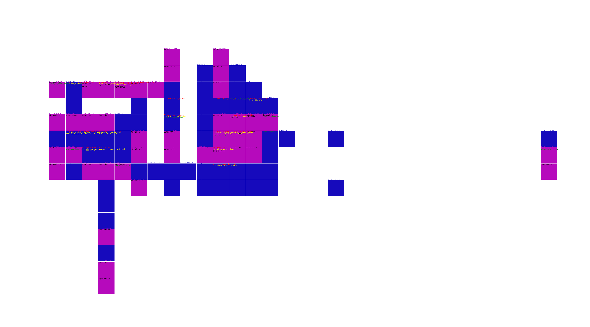
human_world_hidden_region
Item Memory used 16
Creatures attributes 15/64/82
0 100% 0x50 0a_horned_slime wd128-125 md142-115 a14 a14 m0
100% item_11c_healing_potion
1 100% 0x50 0a_horned_slime wd128-125 md142-115 a14 a14 m0
100% item_90_steel_boots
2 100% 0x20 0a_horned_slime wd128-125 md142-115 a14 a14 m0
100% item_124_poison_vaccine
3 100% 0x20 0e_dinogon wd102-93 md64-163 a42 a38 m0
100% item_122_evil_eye
4 100% 0x50 06_fanged_worm wd77-112 md64-163 a14 a15 m0
5 100% 0x20 02_parasite wd123-45 md120-122 a12 a12 m0
100% item_139_soul_pod_14_sp
6 100% 0x20 05_armored_warrior wd112-128 md64-64 a85 a60 m0
100% item_99_leg_guard
7 100% 0x20 02_parasite wd123-45 md120-122 a12 a12 m0
100% item_a3_small_shield
8 100% 0x20 02_parasite wd123-45 md120-122 a12 a12 m0
9 100% 0x20 02_parasite wd123-45 md120-122 a12 a12 m0
a 100% 0x20 02_parasite wd123-45 md120-122 a12 a12 m0
100% item_5f_magical_leather_armor
b 100% 0x20 05_armored_warrior wd112-128 md64-64 a85 a60 m0
100% item_126_bottle_of_light
c 100% 0x50 04_night_howler wd83-104 md133-118 a34 a27 m0
d 100% 0x50 04_night_howler wd83-104 md133-118 a34 a27 m0
100% item_12c_pitcher_of_nadya_hp
e 100% 0x20 0d_blood_bone wd112-64 md96-80 a0 a0 m0
100% item_b_lethal_rapier
f 100% 0x20 0d_blood_bone wd112-64 md96-80 a0 a0 m0
10 100% 0x20 0d_blood_bone wd112-64 md96-80 a0 a0 m0
11 100% 0x20 0d_blood_bone wd112-64 md96-80 a0 a0 m0
20 100% 0x50 05_cocoon_plant wd80-112 md192-128 a12 a12 m0
0 item_11e_anti_venom
1 item_125_dust_of_rage
2 item_10c_torch
3 item_123_fire_world_stone
4 item_138_soul_pod_29_sp
5 item_11e_anti_venom
6 item_11c_healing_potion
7 item_11c_healing_potion
8 item_11c_healing_potion
9 item_11c_healing_potion
a item_122_evil_eye
b item_11c_healing_potion
c item_125_dust_of_rage
d item_49_crown_of_resist
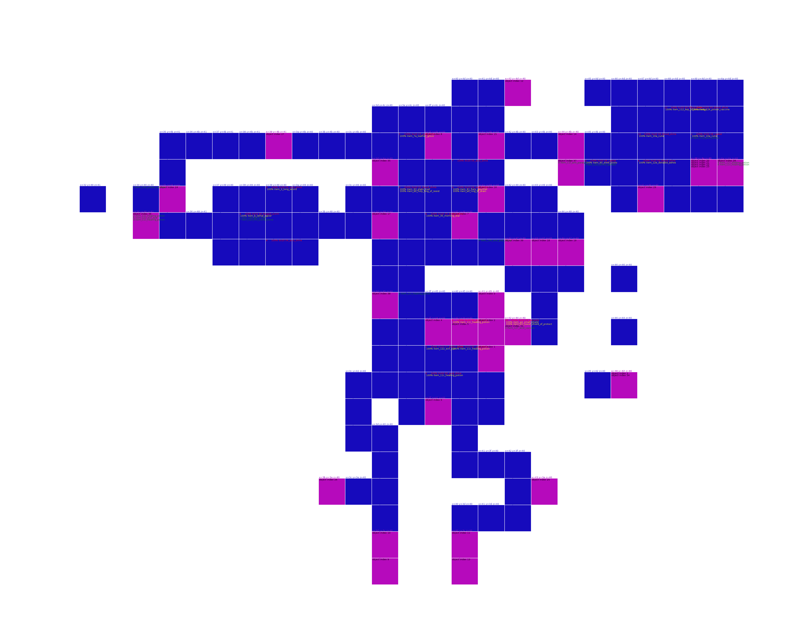
human_world_forgotten_region
Item Memory used 16
Creatures attributes 31/66/128
0 100% 0x30 06_armored_slayer wd96-125 md118-131 a120 a90 m0
1 100% 0x30 06_armored_slayer wd96-125 md118-131 a120 a90 m0
2 100% 0x30 06_armored_slayer wd96-125 md118-131 a120 a90 m0
100% item_117_brass_key
3 100% 0x30 06_armored_slayer wd96-125 md118-131 a120 a90 m0
100% item_5d_leather_armor
4 100% 0x30 06_armored_slayer wd96-125 md118-131 a120 a90 m0
100% item_34_shining_mace
5 100% 0x30 06_warpoor wd128-56 md152-163 a28 a30 m0
6 100% 0x30 06_warpoor wd128-56 md152-163 a28 a30 m0
100% item_128_spirit_book
7 100% 0x30 06_warpoor wd128-56 md152-163 a28 a30 m0
8 100% 0x30 06_warpoor wd128-56 md152-163 a28 a30 m0
100% item_11c_healing_potion
9 100% 0x30 02_gordoral wd126-80 md195-255 a26 a26 m0
100% item_11d_magic_potion
a 100% 0x30 06_warpoor wd128-56 md152-163 a28 a30 m0
100% item_10a_cune
b 100% 0x30 02_gordoral wd126-80 md195-255 a26 a26 m0
100% item_126_bottle_of_light
c 100% 0x30 02_gordoral wd126-80 md195-255 a26 a26 m0
100% item_126_bottle_of_light
d 100% 0x30 02_gordoral wd126-80 md195-255 a26 a26 m0
100% item_10a_cune
e 100% 0x30 0a_dweller wd120-131 md126-150 a18 a20 m0
100% item_120_divine_symbol
f 100% 0x30 0a_dweller wd120-131 md126-150 a18 a20 m0
10 100% 0x30 0a_dweller wd120-131 md126-150 a18 a20 m0
11 100% 0x30 0a_dweller wd120-131 md126-150 a18 a20 m0
12 100% 0x30 0a_dweller wd120-131 md126-150 a18 a20 m0
100% item_4a_crown_of_composure
100% item_6a_fiery_plate_mail
100% item_1a_lethal_bastard_sword
13 100% 0x30 0a_dweller wd120-131 md126-150 a18 a20 m0
0 item_11c_healing_potion
1 item_11f_anti_paralytic
2 item_11c_healing_potion
3 item_11c_healing_potion
4 item_10a_cune
5 item_48_crown
6 item_a2_buckler
7 item_12e_dorados_ashes
8 item_139_soul_pod_14_sp
9 item_126_bottle_of_light
a item_139_soul_pod_14_sp
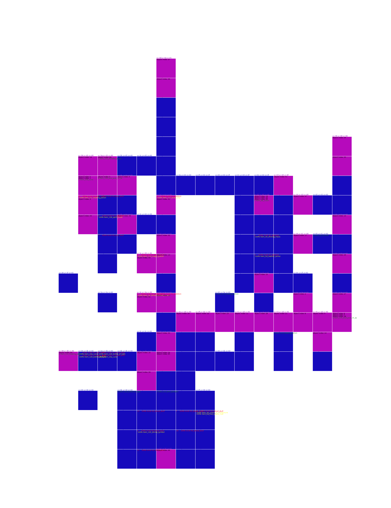
human_world_cursed_region
Item Memory used 16
Creatures attributes 25/80/128
0 100% 0x30 0c_worm_face wd96-160 md126-77 a30 a30 m0
1 100% 0x30 0c_worm_face wd96-160 md126-77 a30 a30 m0
100% item_63_plate_mail
100% item_aa_fiery_large_shield
2 100% 0x35 0a_dark_bishop wd120-107 md255-255 a14 a35 m0
100% item_42_bow
3 100% 0x35 0a_dark_bishop wd120-107 md255-255 a14 a35 m0
4 100% 0x30 01_shadow_spider wd91-125 md112-117 a12 a13 m0
5 100% 0x35 0a_dark_bishop wd120-107 md255-255 a14 a35 m0
100% item_127_acid_vaccine
6 100% 0x35 0a_dark_bishop wd120-107 md255-255 a14 a35 m0
100% item_1_short_sword
7 100% 0x35 0a_dark_bishop wd120-107 md255-255 a14 a35 m0
8 100% 0x35 0a_dark_bishop wd120-107 md255-255 a14 a35 m0
100% item_11e_anti_venom
9 100% 0x30 05_dark_spirits wd152-104 md255-255 a35 a40 m0
100% item_110_fiery_key
a 100% 0x30 05_dark_spirits wd152-104 md255-255 a35 a40 m0
b 100% 0x30 08_war_demon_1 wd136-130 md255-109 a45 a40 m0
100% item_35_morning_star
c 100% 0x30 08_war_demon_1 wd136-130 md255-109 a45 a40 m0
100% item_92_steel_boots_of_resist
d 100% 0x30 09_demon_bat wd80-109 md128-77 a14 a20 m0
100% item_c4_summoner_ring_of_fire
e 100% 0x30 08_war_demon_1 wd136-130 md255-109 a45 a40 m0
100% item_11c_healing_potion
f 100% 0x80 09_demon_bat wd80-109 md128-77 a14 a20 m0
10 100% 0x10 09_demon_bat wd80-109 md128-77 a14 a20 m0
21 100% 0x50 0a_guardian_a wd128-67 md176-149 a15 a16 m0
100% item_11c_healing_potion
30 100% 0x30 04_fat_mole_a wd0-0 md0-0 a0 a0 m0
100% item_11f_anti_paralytic
0 item_11c_healing_potion
1 item_10a_cune
2 item_12d_pitcher_of_nadya_mp
3 item_5c_quilted_armor
4 item_124_poison_vaccine
5 item_11c_healing_potion
6 item_11e_anti_venom
7 item_10a_cune

Earth World
earth_world_rotting_cavern
Item Memory used 16
Creatures attributes 194/64/128
0 100% 0x30 06_mystic_tower wd126-88 md80-112 a20 a20 m0
100% item_10a_cune
1 100% 0x20 0a_bone_wolf wd112-48 md255-144 a225 a220 m0
2 100% 0x20 0a_bone_wolf wd112-48 md255-144 a225 a220 m0
100% item_127_acid_vaccine
3 100% 0x20 0a_bone_wolf wd112-48 md255-144 a225 a220 m0
100% item_11d_magic_potion
4 100% 0x30 09_dementor wd142-120 md109-126 a30 a23 m0
100% item_10a_cune
5 100% 0x30 09_dementor wd142-120 md109-126 a30 a23 m0
100% item_125_dust_of_rage
6 100% 0x30 09_dementor wd142-120 md109-126 a30 a23 m0
7 100% 0x20 0a_bone_wolf wd112-48 md255-144 a225 a220 m0
100% item_11f_anti_paralytic
8 100% 0x40 06_elder wd94-99 md32-58 a14 a14 m0
100% item_ce_soul_ring
9 100% 0x40 06_elder wd94-99 md32-58 a14 a14 m0
a 100% 0x35 04_minor_dwarf wd80-106 md48-80 a12 a12 m0
100% item_36_swift_morning_star
b 100% 0x35 04_minor_dwarf wd80-106 md48-80 a12 a12 m0
c 100% 0x35 04_minor_dwarf wd80-106 md48-80 a12 a12 m0
100% item_12a_young_dragon_gem
d 100% 0x20 09_cross_breed wd200-64 md255-255 a25 a30 m0
100% item_111_kings_key
e 100% 0x20 09_cross_breed wd200-64 md255-255 a25 a30 m0
100% item_11c_healing_potion
f 100% 0x20 09_cross_breed wd200-64 md255-255 a25 a30 m0
100% item_139_soul_pod_14_sp
10 100% 0x20 09_cross_breed wd200-64 md255-255 a25 a30 m0
100% item_61_scale_mail
11 100% 0x20 09_cross_breed wd200-64 md255-255 a25 a30 m0
100% item_3_long_sword
12 100% 0x25 00_master_knight wd98-115 md255-126 a62 a55 m0
13 100% 0x25 00_master_knight wd98-115 md255-126 a62 a55 m0
14 100% 0x25 00_master_knight wd98-115 md255-126 a62 a55 m0
15 100% 0x10 06_oblid wd125-128 md90-53 a43 a35 m0
16 100% 0x10 06_oblid wd125-128 md90-53 a43 a35 m0
17 100% 0x10 06_oblid wd125-128 md90-53 a43 a35 m0
18 100% 0x10 06_oblid wd125-128 md90-53 a43 a35 m0
19 100% 0x20 0c_barrel_snail wd109-67 md32-144 a8 a7 m0
1a 100% 0x20 0c_barrel_snail wd109-67 md32-144 a8 a7 m0
1b 100% 0x60 0e_elder wd94-99 md32-58 a14 a14 m0
1c 100% 0x30 0e_elder wd94-99 md32-58 a14 a14 m0
1d 100% 0x30 0e_elder wd94-99 md32-58 a14 a14 m0
1e 100% 0x30 0e_elder wd94-99 md32-58 a14 a14 m0
20 100% 0x10 04_acid_slime wd70-83 md112-128 a3 a2 m0
30 100% 0x20 0a_blank wd0-0 md0-0 a0 a0 m5
0 item_10a_cune
1 item_12f_spirit_key
2 item_62_scale_mail_of_curing
3 item_10a_cune
4 item_11f_anti_paralytic
5 item_126_bottle_of_light
6 item_139_soul_pod_14_sp
7 item_128_spirit_book
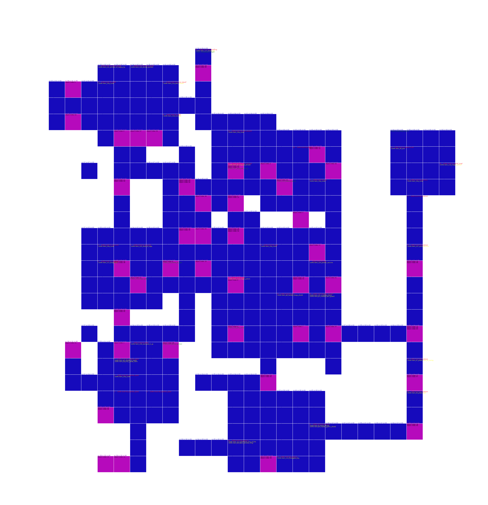
earth_world_poisonous_cavern
Item Memory used 16
Creatures attributes 32/128/128
0 100% 0x15 02_watcher_plant wd48-83 md32-51 a12 a12 m0
1 100% 0x15 02_watcher_plant wd48-83 md32-51 a12 a12 m0
100% item_10a_cune
2 100% 0x15 02_watcher_plant wd48-83 md32-51 a12 a12 m0
100% item_18_bastard_sword
3 100% 0x15 01_blood_skull wd85-90 md120-255 a11 a9 m0
100% item_123_fire_world_stone
4 100% 0x15 01_blood_skull wd85-90 md120-255 a11 a9 m0
100% item_12e_dorados_ashes
5 100% 0x15 01_blood_skull wd85-90 md120-255 a11 a9 m0
6 100% 0x15 01_blood_skull wd85-90 md120-255 a11 a9 m0
100% item_8f_hard_boots
7 100% 0x15 02_watcher_plant wd48-83 md32-51 a12 a12 m0
100% item_11c_healing_potion
8 100% 0x15 02_watcher_plant wd48-83 md32-51 a12 a12 m0
100% item_10a_cune
9 100% 0x15 02_watcher_plant wd48-83 md32-51 a12 a12 m0
100% item_11d_magic_potion
a 100% 0x15 02_watcher_plant wd48-83 md32-51 a12 a12 m0
100% item_95_caustic_steel_boots
b 100% 0x50 05_blood_brain wd128-141 md126-181 a14 a14 m0
100% item_47_cap
c 100% 0x60 05_blood_brain wd128-141 md126-181 a14 a14 m0
100% item_12e_dorados_ashes
d 100% 0x40 06_hell_warrior wd144-160 md64-128 a230 a200 m0
100% item_e9_bracelet_of_movement
e 100% 0x40 06_hell_warrior wd144-160 md64-128 a230 a200 m0
100% item_124_poison_vaccine
f 100% 0x40 06_hell_warrior wd144-160 md64-128 a230 a200 m0
10 100% 0x15 0c_hanging_dead wd80-51 md67-48 a5 a5 m0
100% item_83_gauntlet
11 100% 0x15 0c_hanging_dead wd80-51 md67-48 a5 a5 m0
12 100% 0x15 0c_hanging_dead wd80-51 md67-48 a5 a5 m0
13 100% 0x15 0c_hanging_dead wd80-51 md67-48 a5 a5 m0
14 100% 0x15 0c_hanging_dead wd80-51 md67-48 a5 a5 m0
15 100% 0x15 0c_hanging_dead wd80-51 md67-48 a5 a5 m0
16 100% 0x20 06_skeleton wd88-54 md117-139 a15 a14 m0
17 100% 0x20 06_skeleton wd88-54 md117-139 a15 a14 m0
18 100% 0x20 06_skeleton wd88-54 md117-139 a15 a14 m0
19 100% 0x30 0d_trickster wd125-168 md115-74 a15 a18 m0
1a 100% 0x30 0d_trickster wd125-168 md115-74 a15 a18 m0
1b 100% 0x30 0d_trickster wd125-168 md115-74 a15 a18 m0
1d 100% 0x20 02_watcher_plant wd48-83 md32-51 a12 a12 m0
1e 100% 0x30 0d_trickster wd125-168 md115-74 a15 a18 m0
1f 100% 0x30 0d_trickster wd125-168 md115-74 a15 a18 m0
20 100% 0x10 00_duhrin wd104-198 md112-138 a0 a0 m8
30 100% 0x20 05_blank wd0-0 md0-0 a0 a0 m0
31 100% 0x70 04_auriel_b wd240-255 md104-104 a75 a70 m9
32 100% 0x50 0b_blank wd0-0 md0-0 a0 a0 m0
33 100% 0x50 0a_blank wd0-0 md0-0 a0 a0 m7
0 item_11c_healing_potion
1 item_11f_anti_paralytic
2 item_11c_healing_potion
3 item_11c_healing_potion
5 item_10c_torch
6 item_10a_cune
7 item_136_soul_pod_5_sp
8 item_139_soul_pod_14_sp
a item_127_acid_vaccine
b item_11c_healing_potion
1c item_127_acid_vaccine
1d item_11c_healing_potion
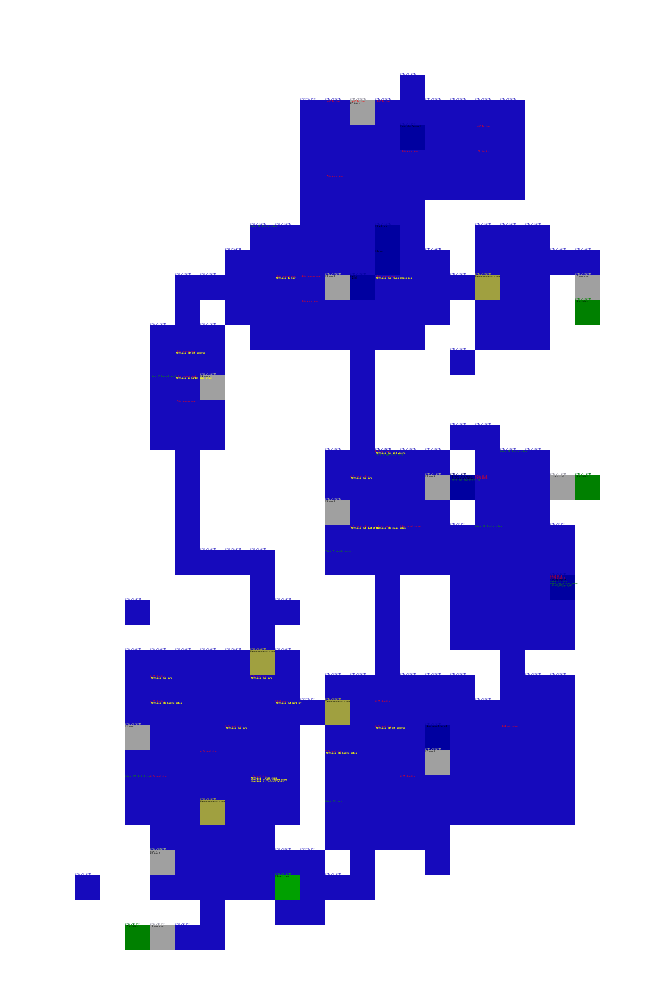
earth_world_stone_cavern
Item Memory used 16
Creatures attributes 15/110/128
0 100% 0x60 0c_maristella wd72-80 md93-125 a20 a30 m0
1 100% 0x50 0c_maristella wd72-80 md93-125 a20 a30 m0
100% item_11c_healing_potion
2 100% 0x50 0c_maristella wd72-80 md93-125 a20 a30 m0
100% item_11c_healing_potion
3 100% 0x30 05_hobble_worm wd96-136 md72-58 a25 a20 m0
100% item_10a_cune
4 100% 0x30 05_hobble_worm wd96-136 md72-58 a25 a20 m0
5 100% 0x30 05_hobble_worm wd96-136 md72-58 a25 a20 m0
6 100% 0x30 05_hobble_worm wd96-136 md72-58 a25 a20 m0
7 100% 0x30 05_hobble_worm wd96-136 md72-58 a25 a20 m0
100% item_120_divine_symbol
8 100% 0x30 05_hobble_worm wd96-136 md72-58 a25 a20 m0
100% item_14_crushing_broad_sword
9 100% 0x30 05_hobble_worm wd96-136 md72-58 a25 a20 m0
a 100% 0x40 0a_barrel_snail wd128-112 md96-152 a23 a20 m0
100% item_64_plate_mail
100% item_c7_priest_ring_of_fire
b 100% 0x40 0a_barrel_snail wd128-112 md96-152 a23 a20 m0
100% item_124_poison_vaccine
c 100% 0x25 08_clay_servant wd211-221 md80-112 a27 a26 m0
d 100% 0x25 08_clay_servant wd211-221 md80-112 a27 a26 m0
e 100% 0x25 08_clay_servant wd211-221 md80-112 a27 a26 m0
100% item_127_acid_vaccine
f 100% 0x25 08_clay_servant wd211-221 md80-112 a27 a26 m0
10 100% 0x40 0a_barrel_snail wd128-112 md96-152 a23 a20 m0
100% item_114_floodgate_key
11 100% 0x40 0a_barrel_snail wd128-112 md96-152 a23 a20 m0
12 100% 0x40 0a_barrel_snail wd128-112 md96-152 a23 a20 m0
100% item_10a_cune
13 100% 0x25 0c_dybbuk wd104-96 md128-125 a12 a14 m10
14 100% 0x20 0c_saurian_warrior_a wd66-115 md255-255 a36 a50 m0
100% item_4d_helm
15 100% 0x20 0c_saurian_warrior_a wd66-115 md255-255 a36 a50 m0
16 100% 0x20 0c_saurian_warrior_a wd66-115 md255-255 a36 a50 m0
100% item_123_fire_world_stone
17 100% 0x80 0c_saurian_warrior_a wd66-115 md255-255 a36 a50 m0
30 100% 0x50 00_dybbuk wd96-112 md128-125 a12 a14 m10
100% item_3a_giant_axe
31 100% 0x0 04_dybbuk wd96-112 md128-125 a12 a14 m10
100% item_10a_cune
32 100% 0x0 04_dybbuk wd96-112 md128-125 a12 a14 m10
0 item_11d_magic_potion
1 item_11c_healing_potion
2 item_10c_torch
3 item_120_divine_symbol
4 item_136_soul_pod_5_sp
5 item_124_poison_vaccine
6 item_128_spirit_book
7 item_139_soul_pod_14_sp
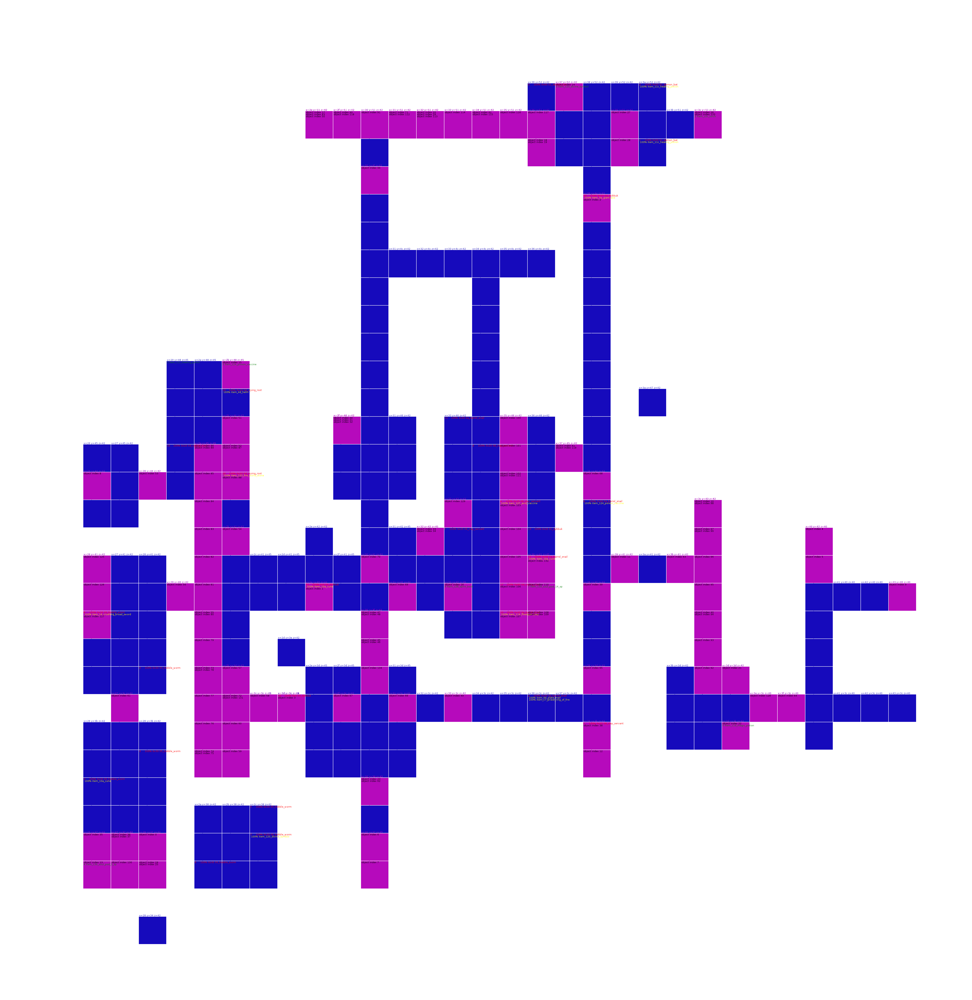
earth_world_quaking_cavern
Item Memory used 16
Creatures attributes 35/70/128
0 100% 0x30 00_acid_slime wd70-83 md112-128 a3 a2 m0
100% item_10e_sacred_feather
1 100% 0x30 00_acid_slime wd70-83 md112-128 a3 a2 m0
100% item_af_dark_great_shield
2 100% 0x30 00_acid_slime wd70-83 md112-128 a3 a2 m0
100% item_91_steel_boots
3 100% 0x30 00_acid_slime wd70-83 md112-128 a3 a2 m0
100% item_10_broad_sword
4 100% 0x30 00_acid_slime wd70-83 md112-128 a3 a2 m0
100% item_60_scale_mail
5 100% 0x30 00_acid_slime wd70-83 md112-128 a3 a2 m0
100% item_136_soul_pod_5_sp
6 100% 0x60 05_water_knight wd120-104 md126-142 a40 a36 m0
100% item_a7_large_shield
7 100% 0x10 05_water_knight wd120-104 md126-142 a40 a36 m0
100% item_10a_cune
8 100% 0x10 05_water_knight wd120-104 md126-142 a40 a36 m0
9 100% 0x10 05_water_knight wd120-104 md126-142 a40 a36 m0
a 100% 0x10 05_water_knight wd120-104 md126-142 a40 a36 m0
100% item_125_dust_of_rage
b 100% 0x90 08_casket wd112-128 md255-255 a20 a25 m0
c 100% 0x35 02_horned_slime wd128-125 md142-115 a14 a14 m0
100% item_10a_cune
d 100% 0x35 02_horned_slime wd128-125 md142-115 a14 a14 m0
e 100% 0x35 02_horned_slime wd128-125 md142-115 a14 a14 m0
100% item_10e_sacred_feather
f 100% 0x30 08_casket wd112-128 md255-255 a20 a25 m0
100% item_112_key_of_knowledge
10 100% 0x30 08_casket wd112-128 md255-255 a20 a25 m0
11 100% 0x30 08_casket wd112-128 md255-255 a20 a25 m0
12 100% 0x30 02_tongue_imp wd83-56 md104-144 a12 a15 m0
13 100% 0x30 02_tongue_imp wd83-56 md104-144 a12 a15 m0
14 100% 0x30 02_tongue_imp wd83-56 md104-144 a12 a15 m0
15 100% 0x30 02_tongue_imp wd83-56 md104-144 a12 a15 m0
16 100% 0x40 08_torg wd70-101 md43-85 a30 a20 m0
17 100% 0x40 08_torg wd70-101 md43-85 a30 a20 m0
18 100% 0x40 08_torg wd70-101 md43-85 a30 a20 m0
20 100% 0x10 02_blood_brain wd128-141 md126-181 a14 a14 m0
21 100% 0x10 02_blood_brain wd128-141 md126-181 a14 a14 m0
22 100% 0x10 02_blood_brain wd128-141 md126-181 a14 a14 m0
0 item_11e_anti_venom
1 item_125_dust_of_rage
2 item_120_divine_symbol
3 item_11c_healing_potion
4 item_124_poison_vaccine
5 item_11f_anti_paralytic
6 item_10a_cune
7 item_10a_cune
8 item_11c_healing_potion
9 item_8d_leather_boots
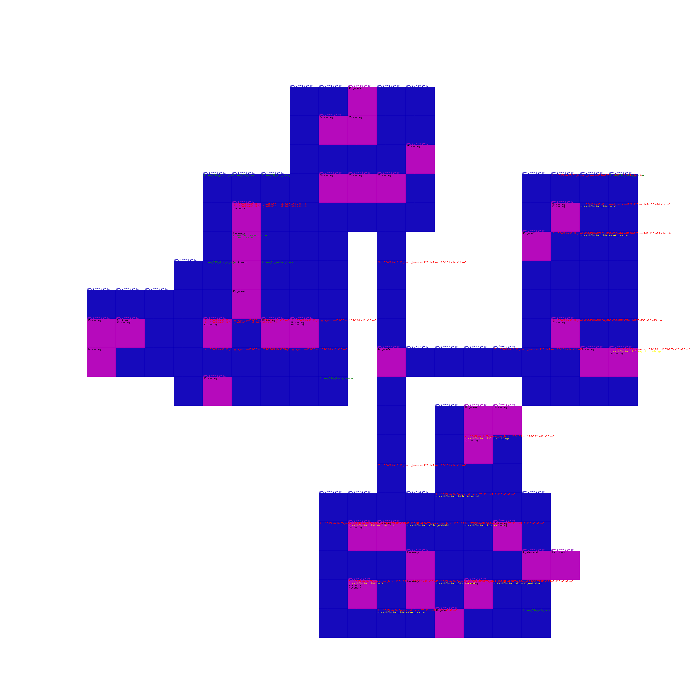
earth_world_false_pit_cavern
Item Memory used 16
Creatures attributes 36/80/128
0 100% 0x50 00_red_puppet wd120-104 md255-255 a35 a40 m0
100% item_7d_wooden_glove
1 100% 0x50 0c_ray_plant wd168-72 md144-112 a16 a15 m0
100% item_10c_torch
2 100% 0x10 0c_ray_plant wd168-72 md144-112 a16 a15 m0
100% item_4b_wizard_crown
3 100% 0x10 0c_ray_plant wd168-72 md144-112 a16 a15 m0
100% item_2_deadly_short_sword
4 100% 0x10 0c_ray_plant wd168-72 md144-112 a16 a15 m0
5 100% 0x10 0c_ray_plant wd168-72 md144-112 a16 a15 m0
6 100% 0x10 00_night_howler wd83-104 md133-118 a34 a27 m0
100% item_a9_large_shield_of_balance
7 100% 0x10 00_night_howler wd83-104 md133-118 a34 a27 m0
8 100% 0x10 00_night_howler wd83-104 md133-118 a34 a27 m0
9 100% 0x20 04_cannon_snail wd99-160 md72-74 a20 a17 m0
100% item_9b_harden_leg_guard
a 100% 0x20 04_cannon_snail wd99-160 md72-74 a20 a17 m0
100% item_10a_cune
b 100% 0x30 08_guardian_b wd96-67 md255-255 a15 a16 m0
100% item_7e_metal_glove
c 100% 0x30 08_guardian_b wd96-67 md255-255 a15 a16 m0
100% item_118_iron_key
d 100% 0x20 02_mystic_tower wd126-88 md80-112 a20 a20 m0
e 100% 0x20 02_mystic_tower wd126-88 md80-112 a20 a20 m0
f 100% 0x20 02_mystic_tower wd126-88 md80-112 a20 a20 m0
10 100% 0x20 02_mystic_tower wd126-88 md80-112 a20 a20 m0
11 100% 0x50 09_blood_slime wd83-86 md162-255 a5 a4 m0
12 100% 0x50 04_dark_spirits wd120-104 md255-255 a35 a40 m0
13 100% 0x10 04_dark_spirits wd120-104 md255-255 a35 a40 m0
14 100% 0x10 04_dark_spirits wd120-104 md255-255 a35 a40 m0
15 100% 0x10 04_dark_spirits wd120-104 md255-255 a35 a40 m0
16 100% 0x10 04_dark_spirits wd120-104 md255-255 a35 a40 m0
0 item_7b_leather_glove
1 item_136_soul_pod_5_sp
2 item_11c_healing_potion
3 item_93_steel_boots_of_curing
4 item_138_soul_pod_29_sp
5 item_120_divine_symbol
6 item_10a_cune
7 item_12e_dorados_ashes
8 item_11e_anti_venom
9 item_10d_lamp
a item_136_soul_pod_5_sp
b item_11f_anti_paralytic
c item_12e_dorados_ashes
d item_12e_dorados_ashes
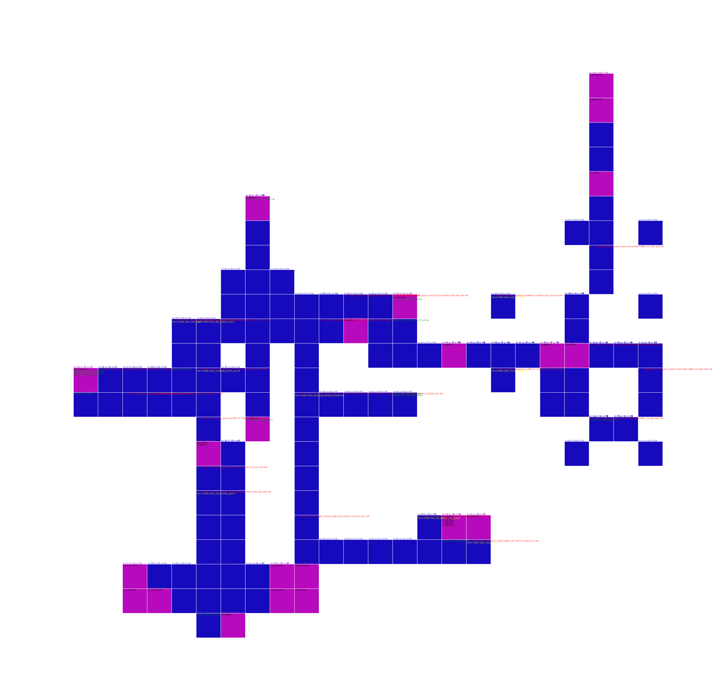
earth_world_hostile_rock_cavern
Item Memory used 8
Creatures attributes 20/80/104
0 100% 0x30 01_earth_knight wd125-122 md112-90 a30 a26 m0
100% item_a5_shield_of_resist
1 100% 0x30 01_earth_knight wd125-122 md112-90 a30 a26 m0
100% item_11c_healing_potion
2 100% 0x30 01_earth_knight wd125-122 md112-90 a30 a26 m0
100% item_4_long_sword
3 100% 0x30 01_earth_knight wd125-122 md112-90 a30 a26 m0
4 100% 0x60 05_earth_knight wd125-122 md112-90 a30 a26 m0
100% item_23_guardian_bastard_sword
5 100% 0x60 05_earth_knight wd125-122 md112-90 a30 a26 m0
6 100% 0x30 04_kiljoy wd64-96 md96-72 a20 a20 m0
100% item_10a_cune
7 100% 0x30 04_kiljoy wd64-96 md96-72 a20 a20 m0
100% item_11c_healing_potion
8 100% 0x30 04_kiljoy wd64-96 md96-72 a20 a20 m0
9 100% 0x30 04_kiljoy wd64-96 md96-72 a20 a20 m0
100% item_11c_healing_potion
a 100% 0x30 04_kiljoy wd64-96 md96-72 a20 a20 m0
100% item_10a_cune
21 100% 0x10 04_dread_knight wd184-160 md240-208 a45 a40 m11
0 item_128_spirit_book
1 item_11c_healing_potion
2 item_11c_healing_potion
3 item_130_blue_crystal
4 item_11e_anti_venom
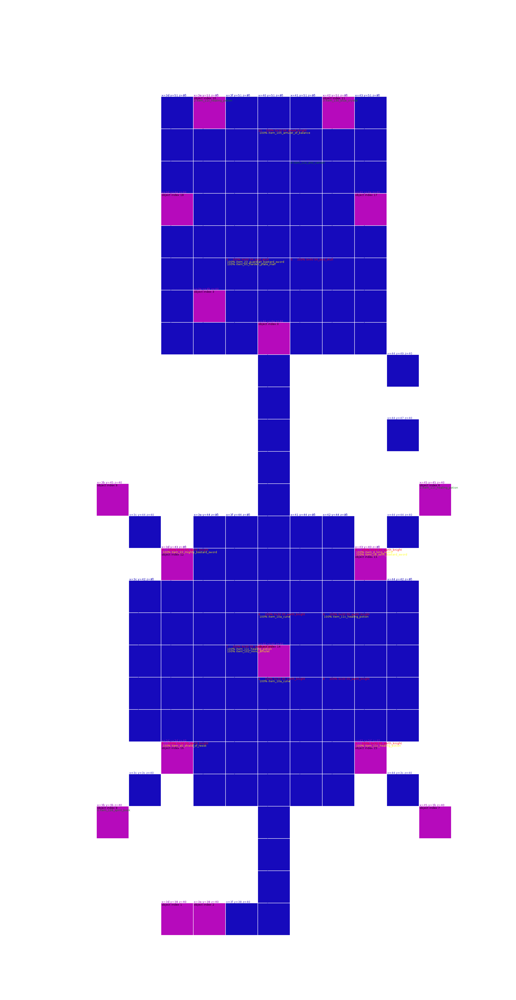
Fire World
fire_world_burning_cavern
Item Memory used 14
Creatures attributes 30/96/128
0 100% 0x30 04_acid_skull wd88-96 md142-136 a12 a10 m0
100% item_cb_balance_ring_of_frost
1 100% 0x30 04_acid_skull wd88-96 md142-136 a12 a10 m0
100% item_11c_healing_potion
2 100% 0x50 04_acid_skull wd88-96 md142-136 a12 a10 m0
100% item_68_plate_mail
100% item_3f_battle_axe
100% item_105_amulet_of_balance
3 100% 0x30 04_acid_skull wd88-96 md142-136 a12 a10 m0
4 100% 0x30 04_acid_skull wd88-96 md142-136 a12 a10 m0
100% item_10a_cune
5 100% 0x30 04_acid_skull wd88-96 md142-136 a12 a10 m0
100% item_131_flaming_key
6 100% 0x80 09_dwarf_warrior wd149-136 md77-109 a15 a15 m0
100% item_d8_ring_of_poison
100% item_ab_great_shield
100% item_104_priest_amulet
7 100% 0x30 09_dwarf_warrior wd149-136 md77-109 a15 a15 m0
100% item_116_key_of_delusion
8 100% 0x30 09_dwarf_warrior wd149-136 md77-109 a15 a15 m0
9 100% 0x50 0d_arachness wd96-192 md224-255 a36 a36 m0
a 100% 0x60 09_dwarf_warrior wd149-136 md77-109 a15 a15 m0
100% item_11e_anti_venom
b 100% 0x60 09_dwarf_warrior wd149-136 md77-109 a15 a15 m0
100% item_fb_magical_amulet
100% item_40_deadly_battle_axe
c 100% 0x60 09_dwarf_warrior wd149-136 md77-109 a15 a15 m0
100% item_10a_cune
d 100% 0x60 09_dwarf_warrior wd149-136 md77-109 a15 a15 m0
100% item_101_amulet_of_resist
e 100% 0x60 04_berzerker wd104-72 md32-115 a35 a28 m0
f 100% 0x60 04_berzerker wd104-72 md32-115 a35 a28 m0
100% item_115_mermaid_key
10 100% 0x60 01_beak_plant wd48-96 md74-66 a15 a15 m0
11 100% 0x90 04_berzerker wd104-72 md32-115 a35 a28 m0
100% item_139_soul_pod_14_sp
12 100% 0x90 04_berzerker wd104-72 md32-115 a35 a28 m0
13 100% 0x40 05_horned_slime wd128-125 md142-115 a14 a14 m0
100% item_11c_healing_potion
14 100% 0x40 05_horned_slime wd128-125 md142-115 a14 a14 m0
100% item_10a_cune
15 100% 0x30 05_horned_slime wd128-125 md142-115 a14 a14 m0
100% item_11d_magic_potion
16 100% 0x40 0d_tondrom wd216-163 md72-106 a15 a14 m0
100% item_11c_healing_potion
17 100% 0x40 0d_tondrom wd216-163 md72-106 a15 a14 m0
100% item_cf_soul_ring
18 100% 0x40 0d_tondrom wd216-163 md72-106 a15 a14 m0
100% item_11c_healing_potion
19 100% 0x40 0d_tondrom wd216-163 md72-106 a15 a14 m0
100% item_11c_healing_potion
1a 100% 0x30 05_horned_slime wd128-125 md142-115 a14 a14 m0
100% item_9d_frosty_leg_guard
0 item_139_soul_pod_14_sp
1 item_fc_amulet_of_movement
2 item_10a_cune
3 item_11c_healing_potion
4 item_11c_healing_potion
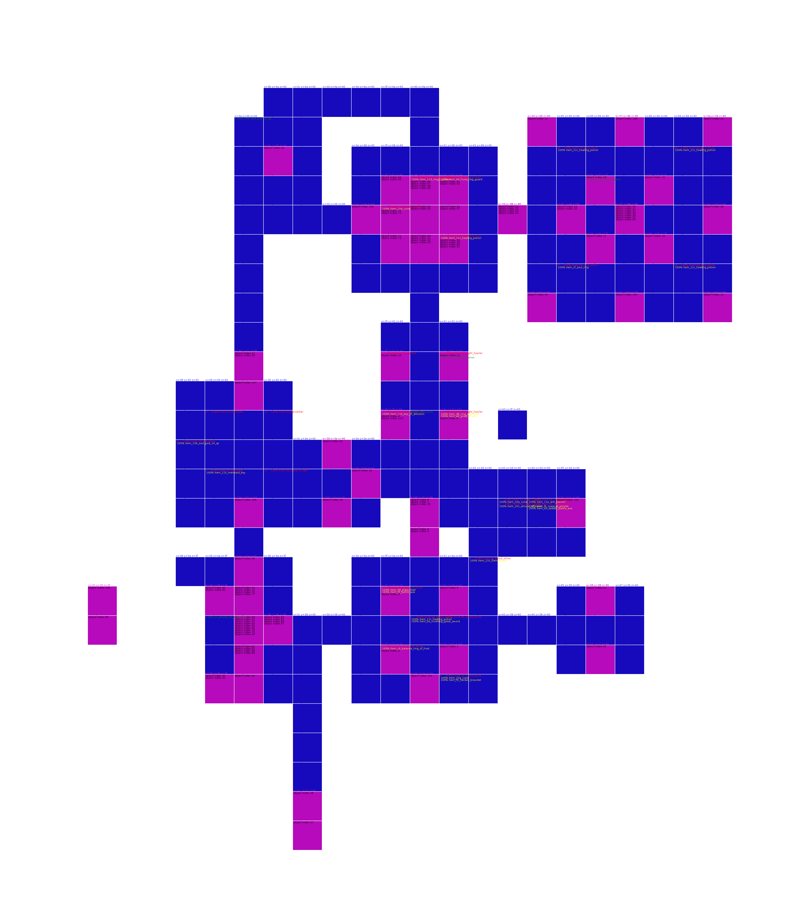
fire_world_molten_cavern
Item Memory used 16
Creatures attributes 79/128/128
0 100% 0x20 09_war_demon_2 wd131-115 md106-126 a45 a40 m0
100% item_11c_healing_potion
1 100% 0x30 09_war_demon_2 wd131-115 md106-126 a45 a40 m0
2 100% 0x30 09_war_demon_2 wd131-115 md106-126 a45 a40 m0
100% item_136_soul_pod_5_sp
3 100% 0x60 09_war_demon_2 wd131-115 md106-126 a45 a40 m0
100% item_10a_cune
4 100% 0x30 09_war_demon_2 wd131-115 md106-126 a45 a40 m0
5 100% 0x30 09_war_demon_2 wd131-115 md106-126 a45 a40 m0
6 100% 0x20 0e_watcher_plant wd48-83 md32-51 a12 a12 m0
100% item_81_fiery_gauntlet
100% item_3e_living_axe
7 100% 0x20 0e_watcher_plant wd48-83 md32-51 a12 a12 m0
100% item_80_metal_glove
100% item_89_arm_guard
8 100% 0x20 0e_watcher_plant wd48-83 md32-51 a12 a12 m0
9 100% 0x60 0d_damned_angel wd96-112 md255-255 a30 a40 m0
100% item_10a_cune
a 100% 0x60 0d_damned_angel wd96-112 md255-255 a30 a40 m0
b 100% 0x60 0d_damned_angel wd96-112 md255-255 a30 a40 m0
c 100% 0x60 0d_damned_angel wd96-112 md255-255 a30 a40 m0
100% item_10a_cune
d 100% 0x60 0d_damned_angel wd96-112 md255-255 a30 a40 m0
100% item_11c_healing_potion
e 100% 0x30 00_kabasaur wd123-144 md152-126 a40 a34 m0
100% item_d7_ring_of_poison
f 100% 0x30 00_kabasaur wd123-144 md152-126 a40 a34 m0
100% item_37_frosty_morning_star
10 100% 0x30 00_kabasaur wd123-144 md152-126 a40 a34 m0
11 100% 0x30 01_chirper wd94-126 md150-112 a24 a20 m0
100% item_7c_wooden_glove
100% item_f8_holy_bracelet
12 100% 0x30 01_chirper wd94-126 md150-112 a24 a20 m0
13 100% 0x30 01_chirper wd94-126 md150-112 a24 a20 m0
14 100% 0x30 01_chirper wd94-126 md150-112 a24 a20 m0
100% item_1e_fiery_bastard_sword
15 100% 0x30 01_chirper wd94-126 md150-112 a24 a20 m0
16 100% 0x30 01_chirper wd94-126 md150-112 a24 a20 m0
100% item_11c_healing_potion
21 100% 0x10 02_dead_abraxus wd255-255 md64-192 a80 a90 m12
100% item_33_crushing_mace
30 100% 0x10 00_abraxus wd136-136 md16-160 a80 a90 m12
100% item_27_great_sword
31 100% 0x5 0c_fat_mole_c wd0-0 md0-0 a0 a0 m13
100% item_10a_cune
32 100% 0x5 08_fat_mole_b wd0-0 md0-0 a0 a0 m13
100% item_139_soul_pod_14_sp
0 item_11c_healing_potion
1 item_12e_dorados_ashes
2 item_11f_anti_paralytic
3 item_139_soul_pod_14_sp
4 item_139_soul_pod_14_sp
5 item_137_soul_pod_53_sp
6 item_136_soul_pod_5_sp
7 item_5_long_sword
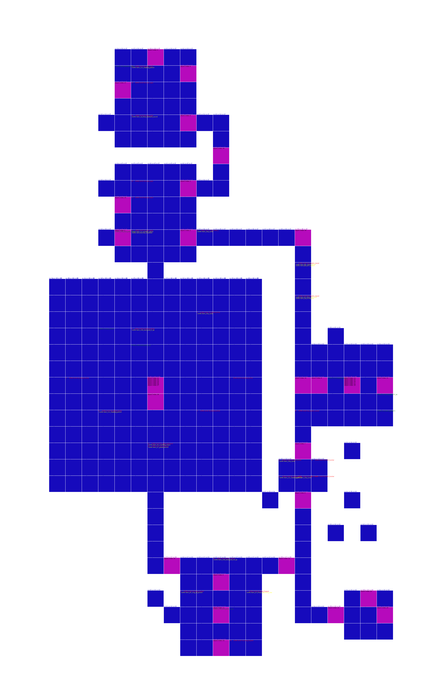
fire_world_phoenix_cave
Item Memory used 16
Creatures attributes 50/78/128
0 100% 0x80 04_king_hopper wd72-136 md22-250 a59 a59 m0
100% item_12e_dorados_ashes
1 100% 0x40 04_king_hopper wd72-136 md22-250 a59 a59 m0
100% item_11f_anti_paralytic
2 100% 0x40 04_king_hopper wd72-136 md22-250 a59 a59 m0
100% item_10a_cune
3 100% 0x80 04_king_hopper wd72-136 md22-250 a59 a59 m0
4 100% 0x80 04_king_hopper wd72-136 md22-250 a59 a59 m0
100% item_12e_dorados_ashes
5 100% 0x40 04_king_hopper wd72-136 md22-250 a59 a59 m0
100% item_11c_healing_potion
6 100% 0x80 04_zygote wd136-157 md70-126 a40 a36 m0
100% item_127_acid_vaccine
7 100% 0x40 04_zygote wd136-157 md70-126 a40 a36 m0
8 100% 0x40 04_zygote wd136-157 md70-126 a40 a36 m0
100% item_10a_cune
9 100% 0x40 04_zygote wd136-157 md70-126 a40 a36 m0
100% item_84_gauntlet
a 100% 0x80 0d_death_serpent wd157-138 md77-69 a60 a55 m0
b 100% 0x80 0d_death_serpent wd157-138 md77-69 a60 a55 m0
100% item_6c_caustic_plate_mail
c 100% 0x40 0d_death_serpent wd157-138 md77-69 a60 a55 m0
100% item_125_dust_of_rage
d 100% 0x40 04_zygote wd136-157 md70-126 a40 a36 m0
100% item_10a_cune
e 100% 0x80 0d_death_serpent wd157-138 md77-69 a60 a55 m0
f 100% 0x40 0c_death_mage wd112-106 md255-255 a75 a85 m0
100% item_5e_leather_armor
10 100% 0x80 04_zygote wd136-157 md70-126 a40 a36 m0
100% item_8_silent_sword
11 100% 0x40 04_zygote wd136-157 md70-126 a40 a36 m0
12 100% 0x40 04_zygote wd136-157 md70-126 a40 a36 m0
13 100% 0x80 04_zygote wd136-157 md70-126 a40 a36 m0
14 100% 0x80 04_zygote wd136-157 md70-126 a40 a36 m0
0 item_11c_healing_potion
1 item_11c_healing_potion
2 item_11e_anti_venom
3 item_11c_healing_potion
4 item_10e_sacred_feather
5 item_6_keenest_long_sword
6 item_10c_torch
7 item_11c_healing_potion
8 item_137_soul_pod_53_sp
9 item_11c_healing_potion
a item_10d_lamp
b item_11c_healing_potion
c item_127_acid_vaccine
d item_11e_anti_venom
e item_125_dust_of_rage
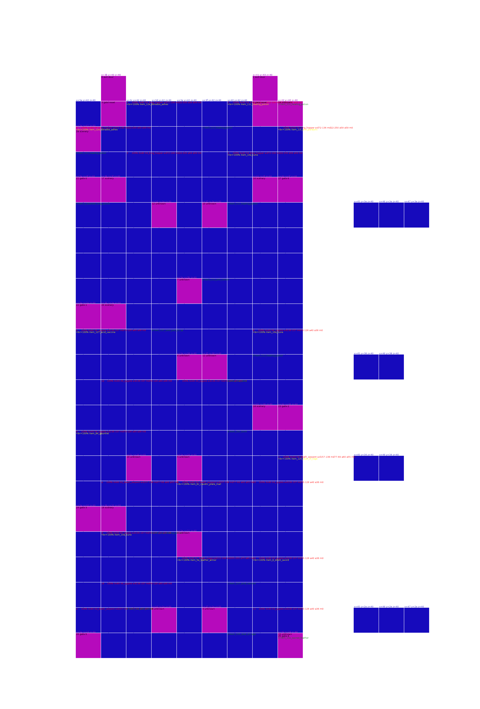
fire_world_ashen_cavern
Item Memory used 16
Creatures attributes 22/142/143
0 100% 0x50 01_berzerker wd104-72 md32-115 a35 a28 m0
100% item_12e_dorados_ashes
1 100% 0x50 01_berzerker wd104-72 md32-115 a35 a28 m0
100% item_10a_cune
2 100% 0x50 01_berzerker wd104-72 md32-115 a35 a28 m0
100% item_d3_dark_ring
3 100% 0x50 00_bone_demon wd141-45 md30-126 a20 a22 m0
100% item_d_shadow_wolf
4 100% 0x50 00_bone_demon wd141-45 md30-126 a20 a22 m0
100% item_da_sorcerer_ring_of_poison
5 100% 0x50 01_berzerker wd104-72 md32-115 a35 a28 m0
6 100% 0x50 01_berzerker wd104-72 md32-115 a35 a28 m0
100% item_e8_bracelet_of_balance
7 100% 0x50 01_berzerker wd104-72 md32-115 a35 a28 m0
100% item_11d_magic_potion
8 100% 0x50 00_bone_demon wd141-45 md30-126 a20 a22 m0
100% item_10c_torch
9 100% 0x50 06_fire_jinn wd99-99 md86-104 a20 a20 m0
100% item_7a_leather_glove
a 100% 0x50 06_fire_jinn wd99-99 md86-104 a20 a20 m0
100% item_120_divine_symbol
b 100% 0x50 06_fire_jinn wd99-99 md86-104 a20 a20 m0
c 100% 0x5 0d_bugler wd112-112 md96-255 a170 a180 m0
100% item_11c_healing_potion
d 100% 0x50 06_tongue_imp wd83-56 md104-144 a12 a15 m0
100% item_120_divine_symbol
e 100% 0x50 06_tongue_imp wd83-56 md104-144 a12 a15 m0
f 100% 0x50 06_tongue_imp wd83-56 md104-144 a12 a15 m0
100% item_126_bottle_of_light
10 100% 0x50 06_fire_jinn wd99-99 md86-104 a20 a20 m0
100% item_dc_caustic_ring
11 100% 0x50 06_fire_jinn wd99-99 md86-104 a20 a20 m0
12 100% 0x50 0a_ruby_demon wd112-64 md32-77 a34 a27 m0
100% item_24_dark_sword
13 100% 0x50 0a_ruby_demon wd112-64 md32-77 a34 a27 m0
100% item_10a_cune
14 100% 0x50 09_cerberus wd104-136 md70-136 a30 a30 m0
15 100% 0x50 09_cerberus wd104-136 md70-136 a30 a30 m0
100% item_123_fire_world_stone
16 100% 0x50 09_cerberus wd104-136 md70-136 a30 a30 m0
100% item_4e_helm
17 100% 0x50 09_cerberus wd104-136 md70-136 a30 a30 m0
20 100% 0x100 0c_ebony_knight wd155-200 md120-174 a70 a50 m14
0 item_11c_healing_potion
1 item_11c_healing_potion
2 item_38_axe
3 item_11c_healing_potion
4 item_10a_cune
6 item_10a_cune
7 item_128_spirit_book
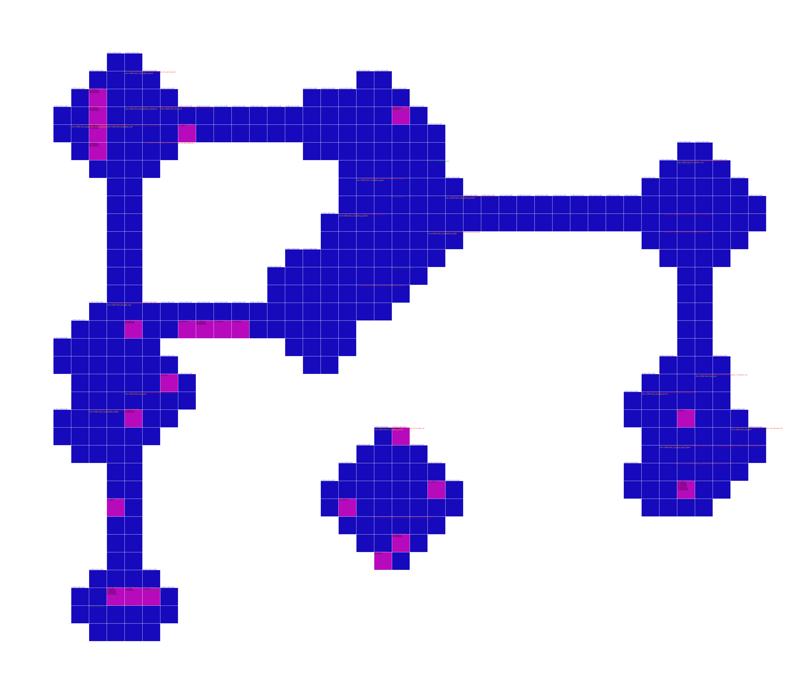
Water World
water_world_impure_pool_area
Item Memory used 16
Creatures attributes 35/80/128
0 100% 0x30 01_horned_slime wd128-125 md142-115 a14 a14 m0
100% item_b3_tower_shield_of_honor
1 100% 0x30 01_horned_slime wd128-125 md142-115 a14 a14 m0
100% item_ae_shining_great_shield
2 100% 0x30 01_horned_slime wd128-125 md142-115 a14 a14 m0
100% item_128_spirit_book
3 100% 0x30 01_horned_slime wd128-125 md142-115 a14 a14 m0
100% item_11d_magic_potion
4 100% 0x30 01_horned_slime wd128-125 md142-115 a14 a14 m0
5 100% 0x15 02_sand_leech_b wd139-160 md192-255 a24 a24 m0
100% item_136_soul_pod_5_sp
6 100% 0x30 02_sand_leech_b wd139-160 md192-255 a24 a24 m0
100% item_9_rapier
7 100% 0x30 02_sand_leech_b wd139-160 md192-255 a24 a24 m0
100% item_a8_harden_large_shield
8 100% 0x30 02_sand_leech_b wd139-160 md192-255 a24 a24 m0
100% item_f_broad_sword
9 100% 0x30 02_sand_leech_b wd139-160 md192-255 a24 a24 m0
a 100% 0x30 05_dwarfling wd80-80 md125-72 a12 a12 m6
100% item_11f_anti_paralytic
b 100% 0x30 05_dwarfling wd80-80 md125-72 a12 a12 m6
100% item_11d_magic_potion
c 100% 0x30 0d_dweller wd131-141 md32-128 a24 a22 m0
100% item_16_guardian_broad_sword
d 100% 0x30 05_dwarfling wd80-80 md125-72 a12 a12 m6
100% item_73_full_plate
e 100% 0x30 05_dwarfling wd80-80 md125-72 a12 a12 m6
f 100% 0x30 0d_dweller wd131-141 md32-128 a24 a22 m0
10 100% 0x30 09_armored_warrior wd112-128 md64-64 a85 a60 m0
11 100% 0x30 09_armored_warrior wd112-128 md64-64 a85 a60 m0
12 100% 0x30 09_armored_warrior wd112-128 md64-64 a85 a60 m0
13 100% 0x50 00_dark_spider wd80-61 md80-91 a8 a8 m0
14 100% 0x50 00_dark_spider wd80-61 md80-91 a8 a8 m0
15 100% 0x40 02_karasu wd99-104 md115-126 a69 a65 m0
16 100% 0x40 02_karasu wd99-104 md115-126 a69 a65 m0
17 100% 0x30 0d_hatchlin wd189-99 md255-255 a20 a20 m0
18 100% 0x40 02_karasu wd99-104 md115-126 a69 a65 m0
19 100% 0x40 02_karasu wd99-104 md115-126 a69 a65 m0
1a 100% 0x40 02_karasu wd99-104 md115-126 a69 a65 m0
1b 100% 0x40 02_karasu wd99-104 md115-126 a69 a65 m0
1c 100% 0x40 02_karasu wd99-104 md115-126 a69 a65 m0
30 100% 0x5 00_fat_mole_f wd0-0 md0-0 a0 a0 m24
31 100% 0x5 04_blank wd90-90 md90-90 a0 a0 m25
0 item_129_sealed_sword_stone
1 item_123_fire_world_stone
2 item_ea_bracelet_of_composure
3 item_11c_healing_potion
4 item_11c_healing_potion
5 item_10a_cune
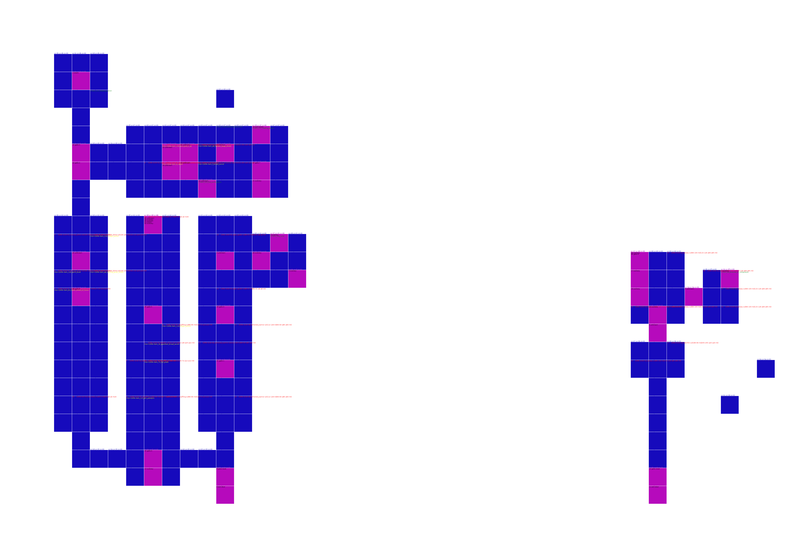
water_world_sunken_river_area
Item Memory used 16
Creatures attributes 30/75/128
0 100% 0x50 04_jinn_lord wd128-150 md86-224 a30 a30 m0
100% item_10a_cune
1 100% 0x50 04_jinn_lord wd128-150 md86-224 a30 a30 m0
100% item_10a_cune
2 100% 0x50 04_jinn_lord wd128-150 md86-224 a30 a30 m0
100% item_b2_tower_shield
100% item_c9_summoner_ring_of_frost
100% item_1b_swift_bastard_sword
3 100% 0x40 00_black_onyx wd112-64 md255-255 a26 a28 m0
100% item_10a_cune
4 100% 0x70 00_black_onyx wd112-64 md255-255 a26 a28 m0
100% item_10a_cune
5 100% 0x40 04_kabasaur wd123-144 md152-126 a40 a34 m0
100% item_50_full_helm
100% item_bc_gothic_shield_of_resist
100% item_22_mighty_bastard_sword
6 100% 0x40 04_kabasaur wd123-144 md152-126 a40 a34 m0
100% item_11c_healing_potion
7 100% 0x40 04_kabasaur wd123-144 md152-126 a40 a34 m0
8 100% 0x40 04_kabasaur wd123-144 md152-126 a40 a34 m0
100% item_c5_summoner_ring_of_fire
9 100% 0x40 04_kabasaur wd123-144 md152-126 a40 a34 m0
a 100% 0x40 00_black_onyx wd112-64 md255-255 a26 a28 m0
100% item_9c_fiery_leg_guard
100% item_53_harden_full_helm
100% item_65_harden_plate_mail
b 100% 0x40 00_black_onyx wd112-64 md255-255 a26 a28 m0
100% item_10a_cune
c 100% 0x40 00_black_onyx wd112-64 md255-255 a26 a28 m0
100% item_10a_cune
0 item_138_soul_pod_29_sp
1 item_11d_magic_potion
2 item_11c_healing_potion
3 item_10c_torch
4 item_11e_anti_venom
5 item_10c_torch
6 item_11c_healing_potion
7 item_11d_magic_potion
1c item_126_bottle_of_light
1d item_127_acid_vaccine
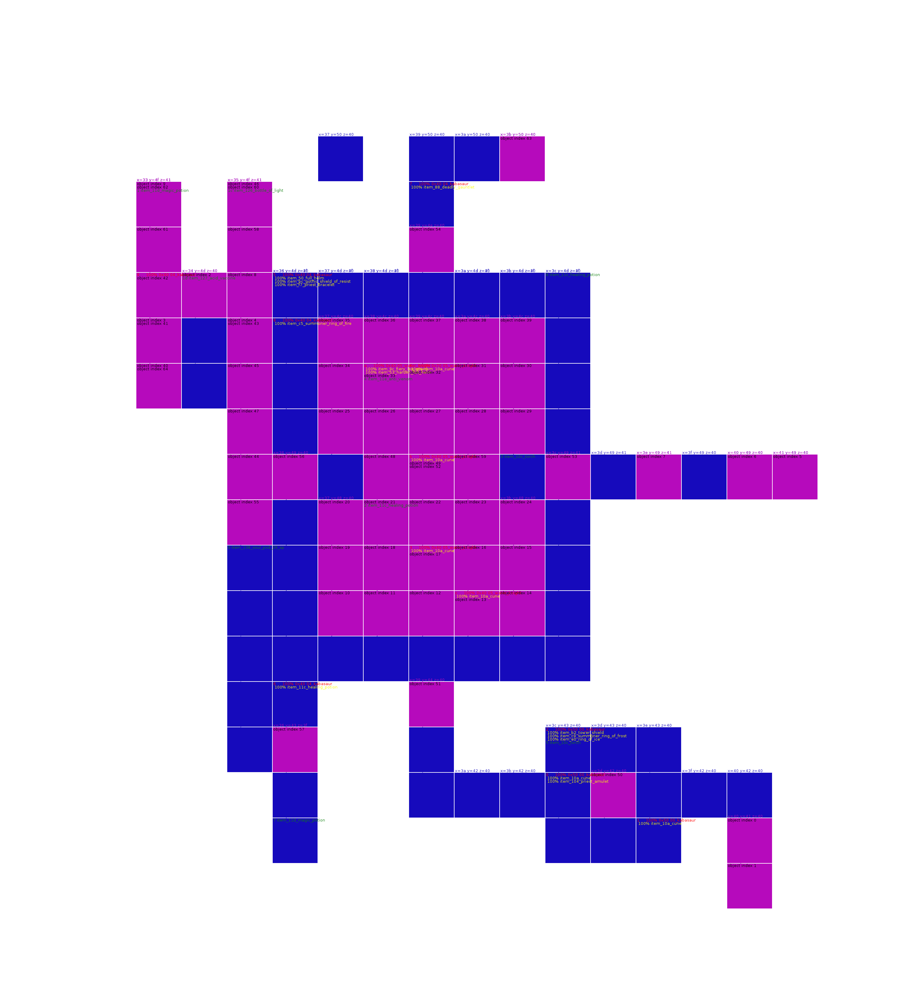
water_world_white_rain_area
Item Memory used 9
Creatures attributes 11/96/128
0 100% 0x30 05_blood_skull wd85-90 md120-255 a11 a9 m0
1 100% 0x30 05_blood_skull wd85-90 md120-255 a11 a9 m0
2 100% 0x30 05_blood_skull wd85-90 md120-255 a11 a9 m0
100% item_10a_cune
3 100% 0x60 05_blood_skull wd85-90 md120-255 a11 a9 m0
100% item_10a_cune
4 100% 0x30 05_blood_skull wd85-90 md120-255 a11 a9 m0
5 100% 0x30 05_blood_skull wd85-90 md120-255 a11 a9 m0
6 100% 0x30 05_blood_skull wd85-90 md120-255 a11 a9 m0
100% item_3c_crushing_axe
100% item_dd_caustic_priest_ring
100% item_102_mind_amulet
7 100% 0x60 04_dragon_turtle wd125-144 md255-110 a52 a45 m0
100% item_11e_anti_venom
8 100% 0x60 04_dragon_turtle wd125-144 md255-110 a52 a45 m0
9 100% 0x90 04_dragon_turtle wd125-144 md255-110 a52 a45 m0
20 100% 0x10 05_magi_magus wd128-192 md248-255 a150 a170 m19
0 item_123_fire_world_stone
1 item_10a_cune
2 item_124_poison_vaccine
3 item_11c_healing_potion
4 item_11d_magic_potion
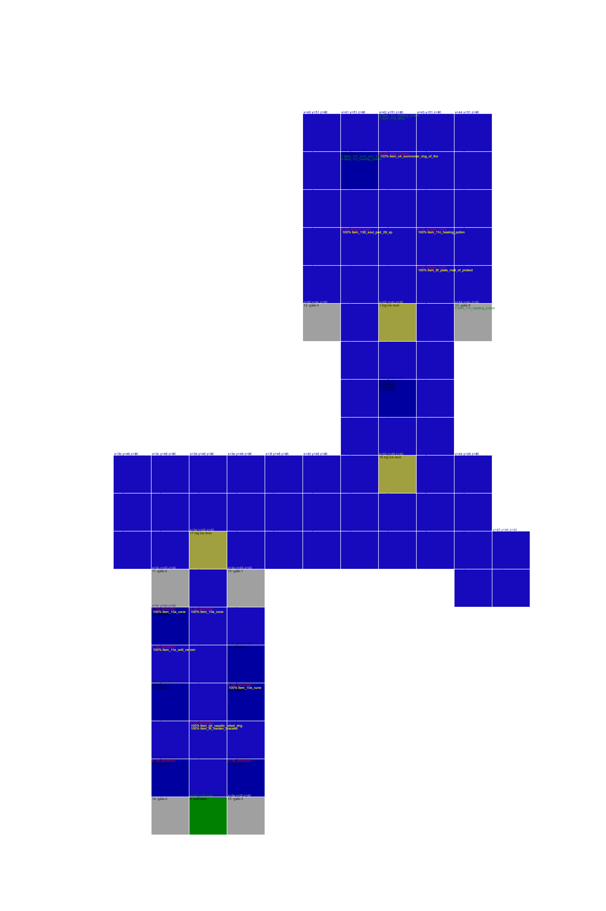
water_world_watery_labyrinth_area
Item Memory used 16
Creatures attributes 37/76/128
0 100% 0x30 0d_deha wd115-109 md206-221 a40 a40 m38
100% item_10a_cune
1 100% 0x30 00_sand_leech_a wd48-67 md80-131 a8 a7 m0
100% item_11c_healing_potion
2 100% 0x30 0d_deha wd115-109 md206-221 a40 a40 m38
100% item_a_rapier
3 100% 0x30 00_sand_leech_a wd48-67 md80-131 a8 a7 m0
4 100% 0x30 08_dark_spider wd80-61 md80-91 a8 a8 m0
100% item_10c_torch
5 100% 0x30 08_dark_spider wd80-61 md80-91 a8 a8 m0
100% item_fd_amulet_of_guardian
6 100% 0x30 08_dark_spider wd80-61 md80-91 a8 a8 m0
100% item_120_divine_symbol
7 100% 0x30 08_dark_spider wd80-61 md80-91 a8 a8 m0
100% item_11f_anti_paralytic
8 100% 0x60 08_trickster wd85-107 md48-22 a12 a10 m0
9 100% 0x60 08_trickster wd85-107 md48-22 a12 a10 m0
100% item_ac_great_shield
a 100% 0x60 08_trickster wd85-107 md48-22 a12 a10 m0
b 100% 0x40 09_koazul wd125-138 md255-255 a38 a40 m0
100% item_11c_healing_potion
c 100% 0x40 09_koazul wd125-138 md255-255 a38 a40 m0
d 100% 0x40 09_koazul wd125-138 md255-255 a38 a40 m0
100% item_fe_deadly_amulet
e 100% 0x40 09_koazul wd125-138 md255-255 a38 a40 m0
100% item_11c_healing_potion
f 100% 0x40 09_koazul wd125-138 md255-255 a38 a40 m0
10 100% 0x30 05_blood_slime wd83-86 md162-255 a5 a4 m0
100% item_96_swift_steel_boots
11 100% 0x30 05_blood_slime wd83-86 md162-255 a5 a4 m0
12 100% 0x30 0c_gaze_hopper wd126-112 md160-163 a24 a25 m0
13 100% 0x30 0c_gaze_hopper wd126-112 md160-163 a24 a25 m0
100% item_db_caustic_ring
14 100% 0x30 0c_gaze_hopper wd126-112 md160-163 a24 a25 m0
100% item_11c_healing_potion
15 100% 0x30 01_blue_flicker wd74-80 md64-64 a8 a6 m0
16 100% 0x30 01_blue_flicker wd74-80 md64-64 a8 a6 m0
17 100% 0x30 05_armored_jinn wd160-152 md86-224 a25 a25 m0
100% item_54_fiery_full_helm
18 100% 0x30 05_armored_jinn wd160-152 md86-224 a25 a25 m0
100% item_11e_anti_venom
19 100% 0x30 05_armored_jinn wd160-152 md86-224 a25 a25 m0
100% item_ed_mind_bracelet
1a 100% 0x30 0c_gaze_hopper wd126-112 md160-163 a24 a25 m0
1b 100% 0x30 0c_gaze_hopper wd126-112 md160-163 a24 a25 m0
1c 100% 0x40 01_blue_flicker wd74-80 md64-64 a8 a6 m0
1d 100% 0x40 01_blue_flicker wd74-80 md64-64 a8 a6 m0
1e 100% 0x40 01_blue_flicker wd74-80 md64-64 a8 a6 m0
1f 100% 0x40 01_blue_flicker wd74-80 md64-64 a8 a6 m0
0 item_b4_harden_tower_shield
1 item_11f_anti_paralytic
2 item_10a_cune
3 item_51_full_helm
4 item_11c_healing_potion
5 item_11e_anti_venom
6 item_11_broad_sword
7 item_11d_magic_potion
8 item_11c_healing_potion
9 item_11c_healing_potion
a item_cd_sorcerer_ring_of_frost
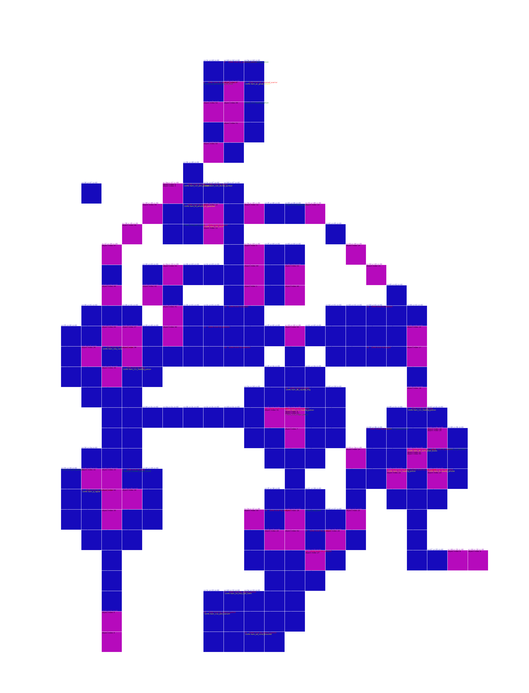
Monster World
monster_world_false_eye_area
Item Memory used 15
Creatures attributes 40/120/128
0 100% 0x60 0d_slasher wd120-104 md126-142 a40 a40 m0
100% item_11c_healing_potion
1 100% 0x60 0d_slasher wd120-104 md126-142 a40 a40 m0
100% item_55_great_helm
2 100% 0x60 0d_slasher wd120-104 md126-142 a40 a40 m0
3 100% 0x60 08_berzerker wd104-72 md32-115 a35 a28 m0
100% item_10a_cune
4 100% 0x60 04_great_frog wd141-190 md142-152 a8 a8 m0
100% item_11c_healing_potion
5 100% 0x60 04_great_frog wd141-190 md142-152 a8 a8 m0
6 100% 0x60 04_great_frog wd141-190 md142-152 a8 a8 m0
100% item_10a_cune
7 100% 0x60 04_great_frog wd141-190 md142-152 a8 a8 m0
8 100% 0x60 04_great_frog wd141-190 md142-152 a8 a8 m0
100% item_43_warrior_bow
100% item_f9_king_bracelet
9 100% 0x60 04_great_frog wd141-190 md142-152 a8 a8 m0
100% item_10a_cune
a 100% 0x60 05_master_howler wd125-102 md51-144 a40 a30 m0
100% item_11c_healing_potion
b 100% 0x60 09_freak wd115-110 md147-192 a78 a65 m0
c 100% 0x60 09_freak wd115-110 md147-192 a78 a65 m0
100% item_10a_cune
d 100% 0x60 09_freak wd115-110 md147-192 a78 a65 m0
100% item_10a_cune
e 100% 0x60 09_freak wd115-110 md147-192 a78 a65 m0
100% item_10a_cune
f 100% 0x60 09_freak wd115-110 md147-192 a78 a65 m0
100% item_e7_bracelet_of_resist
10 100% 0x60 09_descrypha wd112-160 md255-255 a180 a220 m0
100% item_11e_anti_venom
11 100% 0x60 05_gargaral wd126-126 md255-255 a26 a26 m0
12 100% 0x60 05_gargaral wd126-126 md255-255 a26 a26 m0
100% item_100_amulet_of_curing
100% item_eb_bracelet_of_curing
13 100% 0x60 05_gargaral wd126-126 md255-255 a26 a26 m0
100% item_52_full_helm_of_curing
100% item_e4_ring_of_dead_spirit
100% item_e0_ring_of_ice
14 100% 0x60 0a_warpoor wd128-56 md152-163 a28 a30 m0
15 100% 0x60 0a_warpoor wd128-56 md152-163 a28 a30 m0
100% item_44_bow_gun
16 100% 0x60 00_acid_skull wd88-96 md142-136 a12 a10 m0
100% item_138_soul_pod_29_sp
17 100% 0x60 00_acid_skull wd88-96 md142-136 a12 a10 m0
100% item_11c_healing_potion
18 100% 0x40 00_acid_skull wd88-96 md142-136 a12 a10 m0
100% item_7_fiery_long_sword
100% item_d5_dark_priest_ring
30 100% 0x10 02_lizard_servant wd240-240 md240-240 a24 a24 m30
31 100% 0x10 06_lizard_servant wd240-240 md240-240 a24 a24 m30
100% item_10a_cune
0 item_11c_healing_potion
1 item_12e_dorados_ashes
2 item_11c_healing_potion
3 item_11c_healing_potion
4 item_123_fire_world_stone
5 item_123_fire_world_stone
6 item_124_poison_vaccine
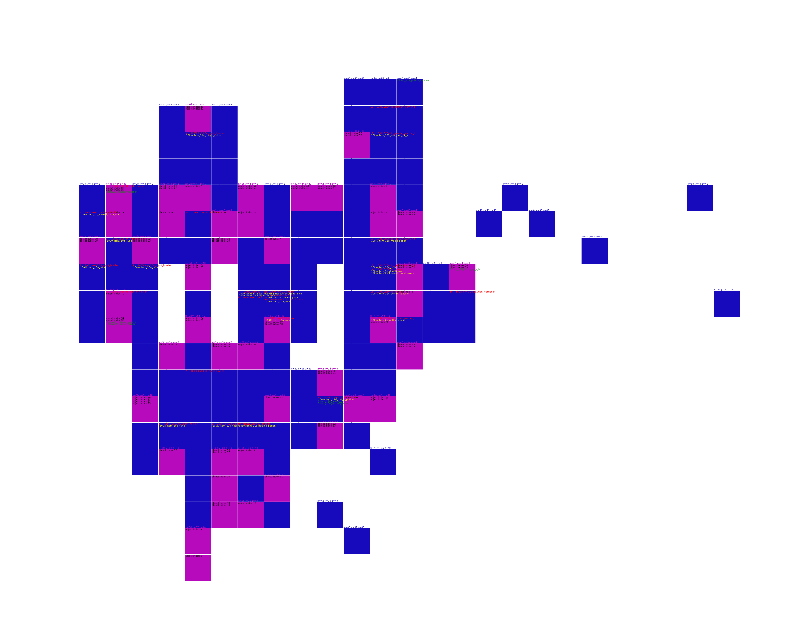
monster_world_screeching_area
Item Memory used 16
Creatures attributes 69/128/128
0 100% 0x14 02_fire_jinn wd99-99 md86-104 a20 a20 m0
100% item_10a_cune
1 100% 0x14 02_fire_jinn wd99-99 md86-104 a20 a20 m0
100% item_10e_sacred_feather
2 100% 0x14 02_fire_jinn wd99-99 md86-104 a20 a20 m0
100% item_11f_anti_paralytic
3 100% 0x40 08_hermit_crab wd91-107 md214-253 a40 a35 m0
4 100% 0x40 08_hermit_crab wd91-107 md214-253 a40 a35 m0
100% item_10a_cune
5 100% 0x50 0d_saurian_warrior_b wd110-136 md255-255 a36 a50 m0
100% item_67_plate_mail_of_curing
6 100% 0x90 0d_saurian_warrior_b wd110-136 md255-255 a36 a50 m0
7 100% 0x50 0d_saurian_warrior_b wd110-136 md255-255 a36 a50 m0
8 100% 0x40 0a_old_face wd96-240 md255-255 a200 a240 m0
100% item_11e_anti_venom
9 100% 0x40 0a_old_face wd96-240 md255-255 a200 a240 m0
100% item_c_shadow_blade
a 100% 0x30 0a_old_face wd96-240 md255-255 a200 a240 m0
100% item_3b_giant_axe
b 100% 0x30 05_warden wd240-224 md255-255 a12 a16 m0
c 100% 0x30 05_warden wd240-224 md255-255 a12 a16 m0
100% item_d9_ring_of_protect
d 100% 0x40 05_warden wd240-224 md255-255 a12 a16 m0
100% item_10a_cune
e 100% 0x40 05_warden wd240-224 md255-255 a12 a16 m0
100% item_11c_healing_potion
f 100% 0x40 04_tree_ogre wd80-115 md160-248 a69 a69 m0
100% item_126_bottle_of_light
10 100% 0x40 04_tree_ogre wd80-115 md160-248 a69 a69 m0
100% item_12e_dorados_ashes
11 100% 0x40 04_tree_ogre wd80-115 md160-248 a69 a69 m0
100% item_2f_mighty_great_sword
21 100% 0x10 0e_necron wd120-125 md255-234 a85 a90 m22
100% item_74_plate_mail_of_honor
30 100% 0x10 01_auriel_c wd255-255 md255-255 a90 a110 m21
100% item_c1_gothic_shield_of_rage
0 item_11c_healing_potion
1 item_9f_caustic_leg_guard
2 item_127_acid_vaccine
1c item_9a_leg_guard
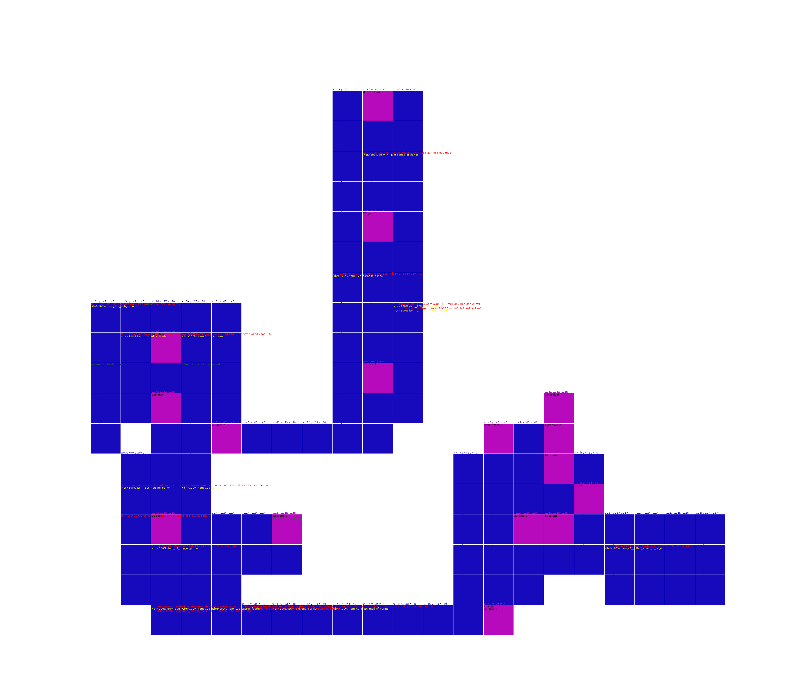
Illusion World
illusion_world_gloomy_domain
Item Memory used 9
Creatures attributes 13/72/128
0 100% 0x30 00_dark_spirits wd88-104 md255-255 a35 a40 m0
100% item_10a_cune
1 100% 0x30 00_dark_spirits wd88-104 md255-255 a35 a40 m0
100% item_10a_cune
2 100% 0x30 00_dark_spirits wd88-104 md255-255 a35 a40 m0
100% item_10a_cune
3 100% 0x30 0e_mystic_tower wd126-88 md80-112 a20 a20 m0
4 100% 0x30 0e_mystic_tower wd126-88 md80-112 a20 a20 m0
5 100% 0x30 0e_mystic_tower wd126-88 md80-112 a20 a20 m0
100% item_10a_cune
6 100% 0x40 00_dark_spirits wd88-104 md255-255 a35 a40 m0
7 100% 0x40 00_dark_spirits wd88-104 md255-255 a35 a40 m0
8 100% 0x40 00_dark_spirits wd88-104 md255-255 a35 a40 m0
9 100% 0x30 01_demon_bat wd80-109 md128-77 a14 a20 m0
100% item_de_caustic_sorcerer_ring
a 100% 0x30 01_demon_bat wd80-109 md128-77 a14 a20 m0
100% item_11e_anti_venom
b 100% 0x40 00_kabasaur wd123-144 md152-126 a40 a34 m0
100% item_df_ring_of_desire
100% item_e6_ring_of_drain
c 100% 0x40 00_kabasaur wd123-144 md152-126 a40 a34 m0
d 100% 0x40 00_kabasaur wd123-144 md152-126 a40 a34 m0
100% item_10a_cune
e 100% 0x40 00_kabasaur wd123-144 md152-126 a40 a34 m0
f 100% 0x40 00_kabasaur wd123-144 md152-126 a40 a34 m0
100% item_10a_cune
10 100% 0x30 01_demon_bat wd80-109 md128-77 a14 a20 m0
11 100% 0x30 01_demon_bat wd80-109 md128-77 a14 a20 m0
100% item_10a_cune
20 100% 0x20 02_dark_imp wd120-104 md255-255 a15 a20 m0
100% item_10a_cune
21 100% 0x20 09_imp wd91-118 md77-96 a10 a11 m0
100% item_b7_tower_shield_of_balance
22 100% 0x20 00_dark_spider wd80-61 md80-91 a8 a8 m0
23 100% 0x20 06_black_imp wd120-120 md255-255 a15 a20 m0
24 100% 0x20 09_sloth_bug wd128-112 md96-152 a23 a20 m0
100% item_29_great_sword
25 100% 0x20 0d_crying_root wd80-134 md32-160 a12 a12 m0
100% item_ec_bracelet_of_recovery
100% item_f4_bracelet_of_composure
26 100% 0x30 08_dark_spider wd80-61 md80-91 a8 a8 m0
100% item_10a_cune
27 100% 0x30 08_dark_spider wd80-61 md80-91 a8 a8 m0
100% item_10a_cune
28 100% 0x40 00_kabasaur wd123-144 md152-126 a40 a34 m0
100% item_ca_summoner_ring_of_frost
100% item_17_dragon_sword
100% item_f7_priest_bracelet
30 100% 0x20 0e_blank wd0-0 md0-0 a0 a0 m39
2 item_120_divine_symbol
3 item_e1_ring_of_dark_souls
5 item_10a_cune
6 item_123_fire_world_stone
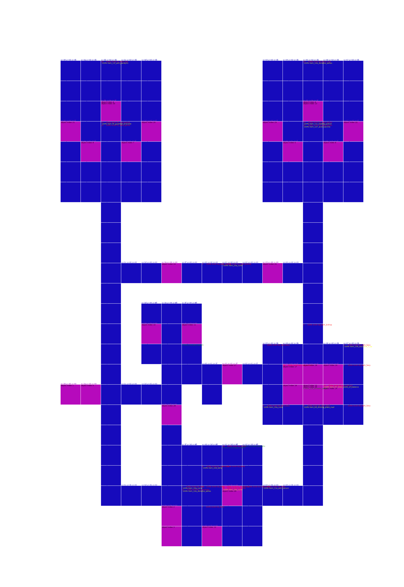
illusion_world_bewilderment_domain
Item Memory used 16
Creatures attributes 35/128/128
0 100% 0x20 01_gargaral wd126-126 md255-255 a26 a26 m0
100% item_19_bastard_sword
1 100% 0x20 01_myconid wd69-112 md42-128 a14 a13 m0
2 100% 0x20 01_myconid wd69-112 md42-128 a14 a13 m0
100% item_ff_amulet_of_composure
3 100% 0x20 01_gargaral wd126-126 md255-255 a26 a26 m0
4 100% 0x20 01_gargaral wd126-126 md255-255 a26 a26 m0
5 100% 0x30 04_demon_warrior wd104-128 md112-152 a50 a50 m0
6 100% 0x30 04_demon_warrior wd104-128 md112-152 a50 a50 m0
7 100% 0x20 0a_demons_eye wd80-74 md255-255 a59 a55 m0
8 100% 0x20 0a_demons_eye wd80-74 md255-255 a59 a55 m0
9 100% 0x20 06_gordoral wd126-80 md195-255 a26 a26 m0
a 100% 0x40 04_demon_warrior wd104-128 md112-152 a50 a50 m0
b 100% 0x40 04_demon_warrior wd104-128 md112-152 a50 a50 m0
c 100% 0x40 04_demon_warrior wd104-128 md112-152 a50 a50 m0
d 100% 0x40 04_demon_warrior wd104-128 md112-152 a50 a50 m0
e 100% 0x40 04_demon_warrior wd104-128 md112-152 a50 a50 m0
f 100% 0x80 0a_rotting_face wd255-255 md192-255 a80 a88 m0
10 100% 0x40 09_cocoon_plant wd99-163 md56-72 a15 a15 m0
11 100% 0x40 09_cocoon_plant wd99-163 md56-72 a15 a15 m0
12 100% 0x40 00_earth_knight wd125-122 md112-90 a30 a26 m0
13 100% 0x10 05_horned_skull wd96-80 md64-112 a26 a26 m0
14 100% 0x30 09_steel_servant wd139-171 md102-157 a26 a28 m0
15 100% 0x60 09_steel_servant wd139-171 md102-157 a26 a28 m0
16 100% 0x30 09_steel_servant wd139-171 md102-157 a26 a28 m0
21 100% 0x40 09_cocoon_plant wd99-163 md56-72 a15 a15 m0
22 100% 0x40 00_earth_knight wd125-122 md112-90 a30 a26 m0
30 100% 0x10 00_gorgoral wd126-126 md255-255 a0 a0 m37
0 item_10e_sacred_feather
1 item_128_spirit_book
2 item_32_mace
3 item_11f_anti_paralytic
4 item_12e_dorados_ashes
5 item_9e_leg_guard_of_protect
6 item_139_soul_pod_14_sp
7 item_10a_cune
8 item_11e_anti_venom
9 item_11c_healing_potion
a item_10d_lamp
b item_8e_leather_boots
c item_120_divine_symbol
d item_116_key_of_delusion
e item_116_key_of_delusion
f item_116_key_of_delusion
10 item_116_key_of_delusion
11 item_136_soul_pod_5_sp
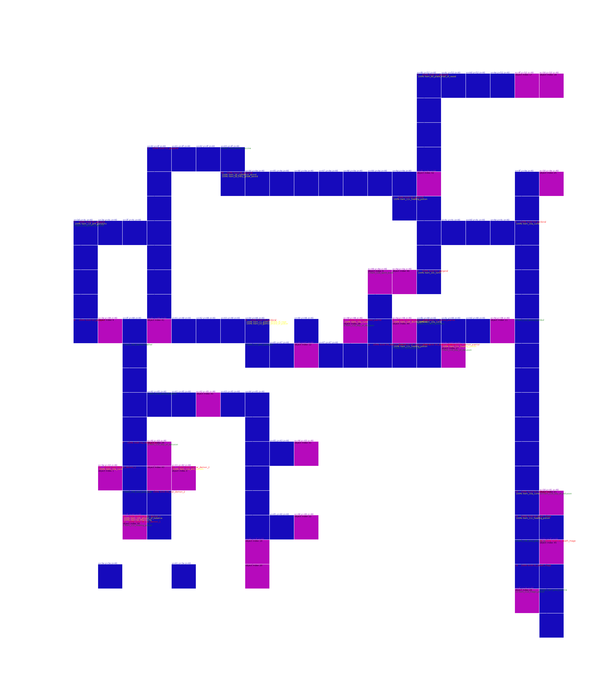
illusion_world_worship_domain
Item Memory used 10
Creatures attributes 18/128/128
0 100% 0x40 08_star_serpent wd67-104 md96-83 a15 a15 m0
1 100% 0x40 08_star_serpent wd67-104 md96-83 a15 a15 m0
2 100% 0x40 08_star_serpent wd67-104 md96-83 a15 a15 m0
100% item_11c_healing_potion
3 100% 0x40 08_star_serpent wd67-104 md96-83 a15 a15 m0
100% item_ee_mighty_ring
4 100% 0x40 08_star_serpent wd67-104 md96-83 a15 a15 m0
5 100% 0x30 02_skeleton wd88-54 md117-139 a15 a14 m0
6 100% 0x30 02_skeleton wd88-54 md117-139 a15 a14 m0
100% item_124_poison_vaccine
7 100% 0x30 02_skeleton wd88-54 md117-139 a15 a14 m0
8 100% 0x30 05_acid_pod wd80-112 md192-128 a12 a12 m0
9 100% 0x30 05_acid_pod wd80-112 md192-128 a12 a12 m0
100% item_98_steel_boots_of_resist
a 100% 0x30 05_acid_pod wd80-112 md192-128 a12 a12 m0
b 100% 0x30 05_acid_pod wd80-112 md192-128 a12 a12 m0
100% item_5b_quilted_armor
c 100% 0x30 05_acid_pod wd80-112 md192-128 a12 a12 m0
100% item_3d_deadly_axe
d 100% 0x30 05_acid_pod wd80-112 md192-128 a12 a12 m0
100% item_6b_frosty_plate_mail
e 100% 0x30 05_acid_pod wd80-112 md192-128 a12 a12 m0
f 100% 0x30 05_acid_pod wd80-112 md192-128 a12 a12 m0
100% item_10a_cune
10 100% 0x30 0e_rotting_face wd255-255 md192-255 a80 a88 m0
11 100% 0x30 0e_rotting_face wd255-255 md192-255 a80 a88 m0
100% item_10a_cune
12 100% 0x30 0e_rotting_face wd255-255 md192-255 a80 a88 m0
100% item_10a_cune
13 100% 0x30 0e_rotting_face wd255-255 md192-255 a80 a88 m0
100% item_10a_cune
14 100% 0x30 0e_rotting_face wd255-255 md192-255 a80 a88 m0
21 100% 0x5 04_wildowess wd106-134 md179-255 a150 a170 m28
100% item_10a_cune
22 100% 0x10 01_gorthaur wd136-112 md96-255 a30 a36 m27
100% item_1d_crushing_bastard_sword
23 100% 0x5 08_fester wd192-90 md93-255 a50 a60 m29
100% item_10a_cune
30 100% 0x80 02_fat_mole_d wd0-0 md0-0 a0 a0 m26
100% item_11c_healing_potion
0 item_10a_cune
1 item_139_soul_pod_14_sp
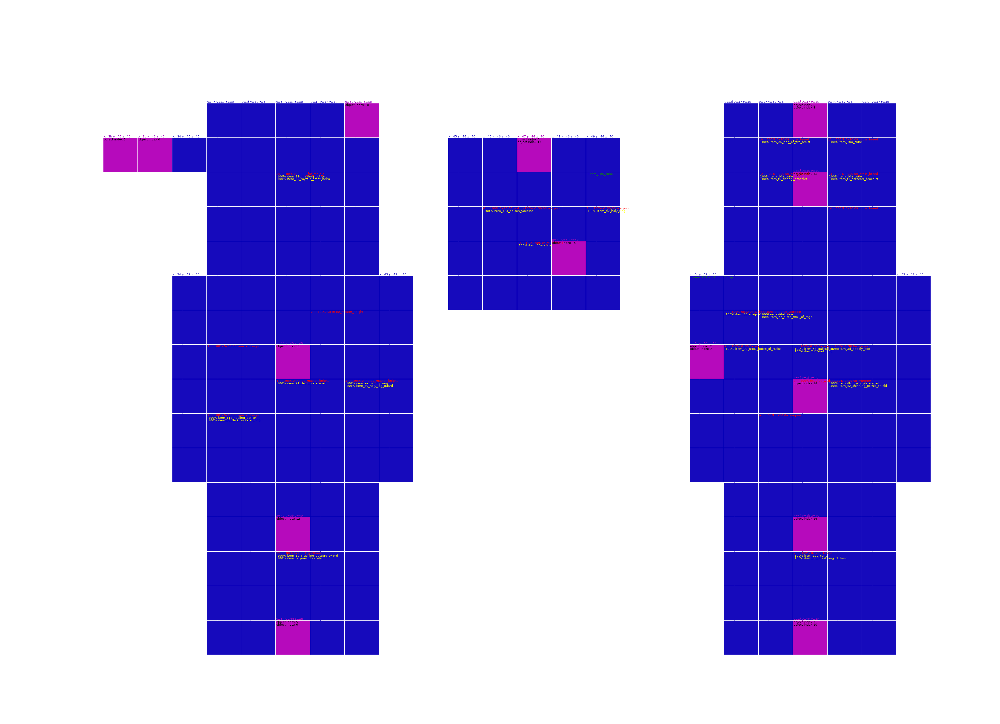
illusion_world_dream_domain
Item Memory used 3
Creatures attributes 22/110/255
0 100% 0x30 09_dark_fairy wd88-120 md255-255 a20 a24 m0
1 100% 0x30 09_dark_fairy wd88-120 md255-255 a20 a24 m0
2 100% 0x30 09_dark_fairy wd88-120 md255-255 a20 a24 m0
20 100% 0x10 01_disguise wd173-131 md255-255 a90 a110 m20
0 item_ef_deadly_bracelet
1 item_1f_frosty_bastard_sword
2 item_2c_deadly_great_sword
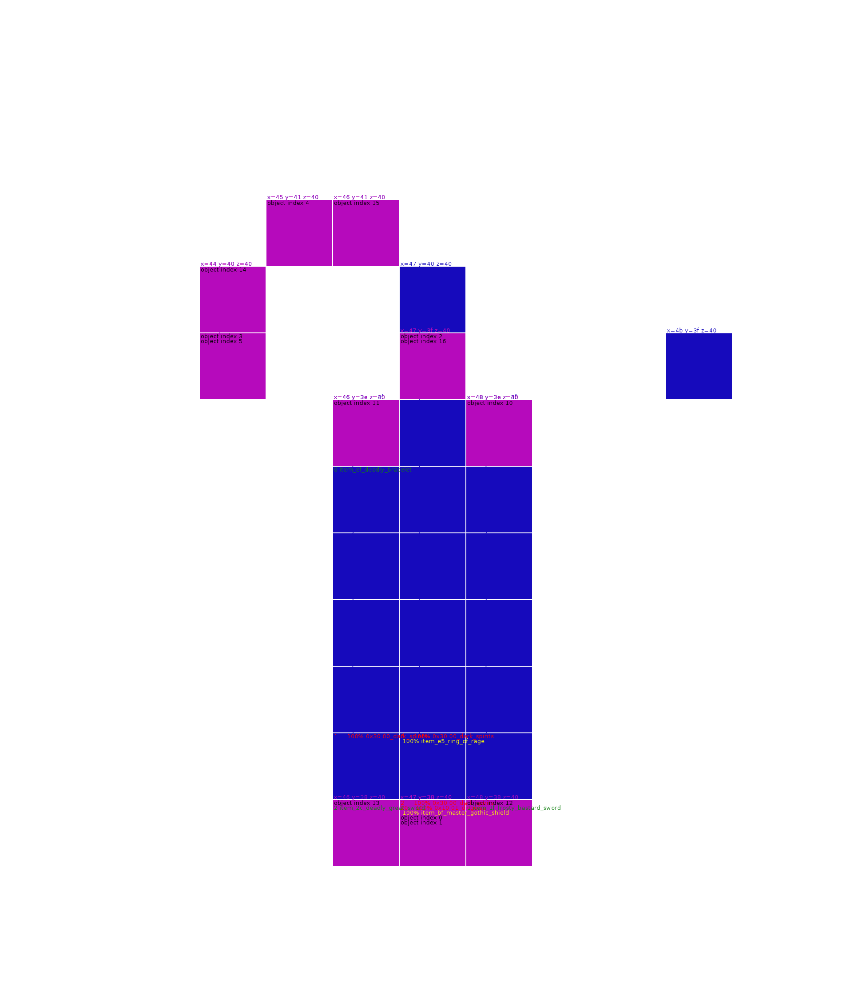
Death World
death_world_dark_castle_layer
Item Memory used 16
Creatures attributes 51/96/128
0 100% 0x30 00_hell_hunter wd109-112 md74-115 a0 a0 m0
100% item_d1_holy_ring_of_priest
1 100% 0x30 00_hell_hunter wd109-112 md74-115 a0 a0 m0
100% item_28_great_sword
100% item_15_keenest_broad_sword
2 100% 0x30 00_hell_hunter wd109-112 md74-115 a0 a0 m0
100% item_10a_cune
3 100% 0x80 02_elder wd94-99 md32-58 a14 a14 m0
4 100% 0x10 02_elder wd94-99 md32-58 a14 a14 m0
100% item_b5_tower_shield_of_protect
100% item_6d_shining_plate_mail
5 100% 0x30 08_wyvern wd128-192 md86-255 a75 a70 m0
100% item_bb_gothic_shield
6 100% 0x30 08_wyvern wd128-192 md86-255 a75 a70 m0
100% item_10a_cune
7 100% 0x30 06_dweller wd120-131 md126-150 a18 a20 m0
100% item_11d_magic_potion
8 100% 0x30 06_dweller wd120-131 md126-150 a18 a20 m0
100% item_4f_magical_helm
9 100% 0x30 06_dweller wd120-131 md126-150 a18 a20 m0
100% item_10a_cune
a 100% 0x30 06_dweller wd120-131 md126-150 a18 a20 m0
b 100% 0x30 06_dweller wd120-131 md126-150 a18 a20 m0
100% item_30_guardian_great_sword
c 100% 0x30 08_oxelus wd88-96 md144-128 a63 a58 m0
100% item_10a_cune
d 100% 0x30 08_oxelus wd88-96 md144-128 a63 a58 m0
100% item_106_amulet_of_recovery
e 100% 0x30 08_oxelus wd88-96 md144-128 a63 a58 m0
100% item_87_swift_gauntlet
f 100% 0x30 08_oxelus wd88-96 md144-128 a63 a58 m0
100% item_10a_cune
10 100% 0x30 01_dark_spirits wd152-104 md255-255 a35 a40 m0
11 100% 0x30 01_dark_spirits wd152-104 md255-255 a35 a40 m0
100% item_ba_harden_gothic_shield
12 100% 0x30 0a_armored_slayer wd96-125 md118-131 a120 a90 m0
100% item_107_star_amulet
13 100% 0x30 0a_armored_slayer wd96-125 md118-131 a120 a90 m0
100% item_d0_holy_ring_of_resist
14 100% 0x30 01_dark_spirits wd152-104 md255-255 a35 a40 m0
100% item_11c_healing_potion
15 100% 0x30 0a_armored_slayer wd96-125 md118-131 a120 a90 m0
100% item_10a_cune
20 100% 0x30 08_armored_guardian wd126-110 md255-112 a100 a80 m36
0 item_12e_dorados_ashes
1 item_10e_sacred_feather
2 item_10e_sacred_feather
3 item_11c_healing_potion
4 item_123_fire_world_stone
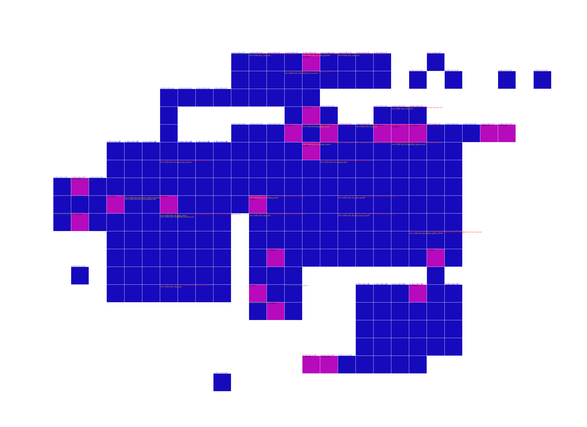
death_world_gate_of_the_dead
Item Memory used 16
Creatures attributes 197/128/128
0 100% 0x40 0a_cocoon_plant wd80-112 md192-128 a12 a12 m0
1 100% 0x40 0a_cocoon_plant wd80-112 md192-128 a12 a12 m0
100% item_11d_magic_potion
2 100% 0x40 02_bone_wolf wd112-48 md255-144 a225 a220 m0
100% item_11c_healing_potion
3 100% 0x40 0d_cocoon_plant wd80-112 md192-128 a12 a12 m0
100% item_10a_cune
4 100% 0x40 0d_cocoon_plant wd80-112 md192-128 a12 a12 m0
100% item_138_soul_pod_29_sp
5 100% 0x40 0d_cocoon_plant wd80-112 md192-128 a12 a12 m0
100% item_124_poison_vaccine
6 100% 0x40 05_doriwi wd112-112 md192-131 a180 a200 m0
100% item_41_keenest_battle_axe
7 100% 0x40 05_doriwi wd112-112 md192-131 a180 a200 m0
100% item_b9_gothic_shield
8 100% 0x40 05_doriwi wd112-112 md192-131 a180 a200 m0
100% item_66_plate_mail_of_resist
9 100% 0x40 05_doriwi wd112-112 md192-131 a180 a200 m0
100% item_20_shining_bastard_sword
a 100% 0x40 0a_skeleton wd88-54 md117-139 a15 a14 m0
100% item_127_acid_vaccine
b 100% 0x40 0a_skeleton wd88-54 md117-139 a15 a14 m0
100% item_bd_gothic_shield_of_honor
c 100% 0x50 0a_skeleton wd88-54 md117-139 a15 a14 m0
d 100% 0x40 00_watcher_plant wd48-83 md32-51 a12 a12 m0
100% item_b6_caustic_tower_shield
e 100% 0x40 00_watcher_plant wd48-83 md32-51 a12 a12 m0
100% item_11f_anti_paralytic
f 100% 0x40 00_watcher_plant wd48-83 md32-51 a12 a12 m0
100% item_e_shadow_tiger
10 100% 0x60 01_blood_slime wd83-86 md162-255 a5 a4 m0
11 100% 0x60 01_blood_slime wd83-86 md162-255 a5 a4 m0
12 100% 0x60 01_blood_slime wd83-86 md162-255 a5 a4 m0
13 100% 0x60 01_blood_slime wd83-86 md162-255 a5 a4 m0
14 100% 0x60 01_blood_slime wd83-86 md162-255 a5 a4 m0
20 100% 0x5 0c_hollow_mage wd130-80 md255-255 a44 a144 m23
0 item_10d_lamp
1 item_139_soul_pod_14_sp
2 item_10e_sacred_feather
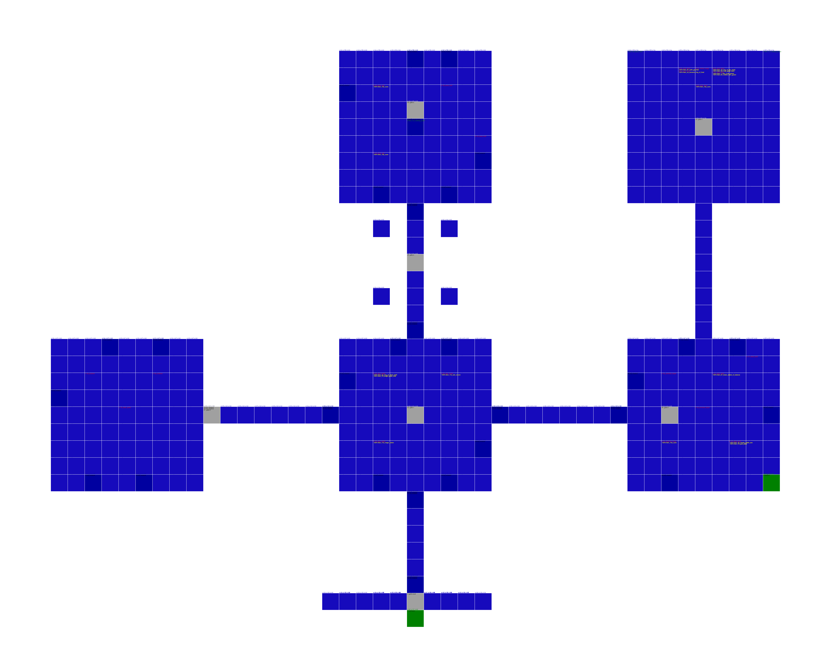
death_world_lingering_curse_layer
Item Memory used 11
Creatures attributes 93/122/128
0 100% 0x30 01_stack_eyes wd141-243 md200-170 a60 a72 m0
100% item_11e_anti_venom
1 100% 0x30 01_stack_eyes wd141-243 md200-170 a60 a72 m0
100% item_10a_cune
2 100% 0x30 01_stack_eyes wd141-243 md200-170 a60 a72 m0
3 100% 0x30 01_stack_eyes wd141-243 md200-170 a60 a72 m0
100% item_10a_cune
4 100% 0x30 01_stack_eyes wd141-243 md200-170 a60 a72 m0
5 100% 0x40 05_unknown_g wd96-80 md202-255 a62 a92 m0
6 100% 0x40 05_unknown_g wd96-80 md202-255 a62 a92 m0
7 100% 0x40 05_unknown_g wd96-80 md202-255 a62 a92 m0
8 100% 0x20 08_apocrypha wd64-176 md255-255 a180 a220 m0
100% item_8a_arm_guard_of_composure
100% item_6e_dark_plate_mail
9 100% 0x20 01_acid_pod wd80-112 md192-128 a12 a12 m0
a 100% 0x20 08_apocrypha wd64-176 md255-255 a180 a220 m0
100% item_11e_anti_venom
b 100% 0x20 01_acid_pod wd80-112 md192-128 a12 a12 m0
100% item_4c_devil_crown
c 100% 0x20 08_apocrypha wd64-176 md255-255 a180 a220 m0
100% item_10a_cune
d 100% 0x20 01_acid_pod wd80-112 md192-128 a12 a12 m0
100% item_10a_cune
e 100% 0x30 0c_old_face wd80-64 md255-255 a120 a110 m0
100% item_10a_cune
f 100% 0x30 0c_old_face wd80-64 md255-255 a120 a110 m0
100% item_10a_cune
10 100% 0x30 0c_old_face wd80-64 md255-255 a120 a110 m0
100% item_10a_cune
11 100% 0x30 0c_old_face wd80-64 md255-255 a120 a110 m0
12 100% 0x30 0c_old_face wd80-64 md255-255 a120 a110 m0
100% item_10a_cune
13 100% 0x30 0c_old_face wd80-64 md255-255 a120 a110 m0
100% item_10a_cune
14 100% 0x30 0c_old_face wd80-64 md255-255 a120 a110 m0
15 100% 0x30 0c_old_face wd80-64 md255-255 a120 a110 m0
100% item_10a_cune
16 100% 0x30 0c_old_face wd80-64 md255-255 a120 a110 m0
17 100% 0x30 0c_old_face wd80-64 md255-255 a120 a110 m0
100% item_86_gauntlet_of_resist
22 100% 0x20 0e_manna_python wd144-160 md186-150 a32 a27 m0
100% item_6f_plate_mail_of_protect
23 100% 0x20 04_berzerker wd104-72 md32-115 a35 a28 m0
100% item_70_eternal_plate_mail
100% item_21_deadly_bastard_sword
30 100% 0x20 00_unknown_e wd112-99 md160-160 a0 a0 m32
31 100% 0x20 04_blank wd90-90 md90-90 a0 a0 m31
0 item_10e_sacred_feather
1 item_120_divine_symbol
2 item_94_steel_boots_of_resist
3 item_56_great_helm
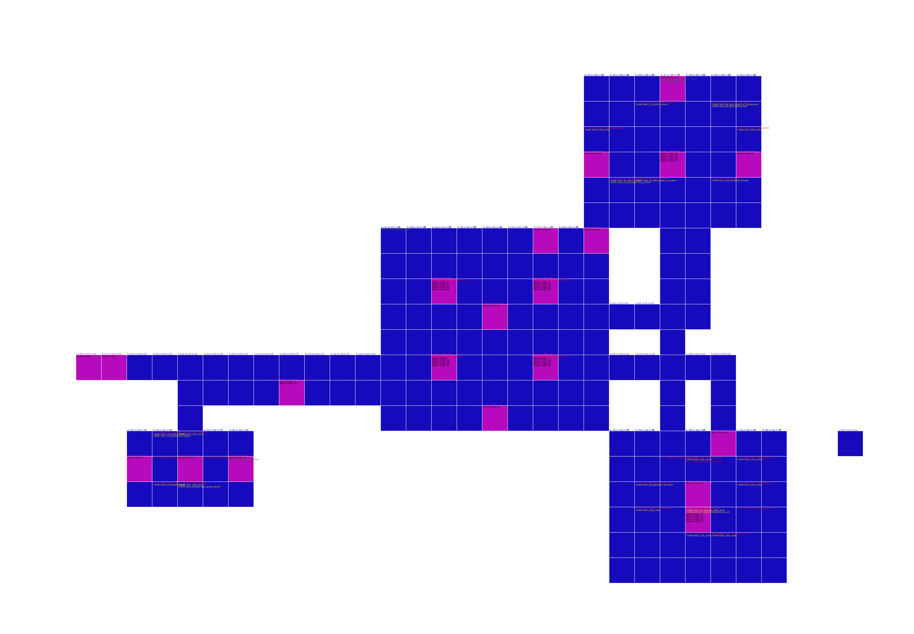
death_world_undead_layer
Item Memory used 16
Creatures attributes 45/128/128
0 100% 0x40 05_hell_hunter wd83-64 md128-115 a15 a14 m0
100% item_a4_small_shield
1 100% 0x40 05_hell_hunter wd83-64 md128-115 a15 a14 m0
2 100% 0x40 05_hell_hunter wd83-64 md128-115 a15 a14 m0
3 100% 0x40 05_hell_hunter wd83-64 md128-115 a15 a14 m0
100% item_ad_great_shield_of_balance
4 100% 0x30 08_claw_head wd112-128 md198-126 a97 a97 m0
100% item_11c_healing_potion
5 100% 0x30 08_claw_head wd112-128 md198-126 a97 a97 m0
100% item_10e_sacred_feather
6 100% 0x30 08_claw_head wd112-128 md198-126 a97 a97 m0
100% item_10a_cune
7 100% 0x15 01_horned_skull wd96-80 md64-112 a26 a26 m0
100% item_103_sorcerer_amulet
8 100% 0x15 01_horned_skull wd96-80 md64-112 a26 a26 m0
9 100% 0x15 01_horned_skull wd96-80 md64-112 a26 a26 m0
a 100% 0x15 01_horned_skull wd96-80 md64-112 a26 a26 m0
b 100% 0x15 01_horned_skull wd96-80 md64-112 a26 a26 m0
100% item_26_righteous_sword
c 100% 0x15 01_horned_skull wd96-80 md64-112 a26 a26 m0
100% item_69_magical_plate_mail
d 100% 0x15 01_horned_skull wd96-80 md64-112 a26 a26 m0
e 100% 0x15 01_horned_skull wd96-80 md64-112 a26 a26 m0
f 100% 0x15 01_horned_skull wd96-80 md64-112 a26 a26 m0
10 100% 0x15 01_horned_skull wd96-80 md64-112 a26 a26 m0
11 100% 0x30 0e_claw_head wd109-112 md74-115 a0 a0 m0
12 100% 0x30 0e_claw_head wd109-112 md74-115 a0 a0 m0
13 100% 0x30 0e_claw_head wd109-112 md74-115 a0 a0 m0
14 100% 0x30 0e_claw_head wd109-112 md74-115 a0 a0 m0
21 100% 0x20 04_king_edward wd255-112 md255-255 a154 a150 m35
30 100% 0x20 01_unknown_b wd255-255 md255-255 a90 a110 m34
31 100% 0x10 09_pulsating_heart wd80-77 md255-255 a0 a0 m0
32 100% 0x10 0d_fat_mole_e wd0-0 md0-0 a0 a0 m33
0 item_11c_healing_potion
1 item_125_dust_of_rage
2 item_128_spirit_book
3 item_11c_healing_potion
4 item_123_fire_world_stone
5 item_120_divine_symbol
6 item_127_acid_vaccine
7 item_11d_magic_potion
8 item_10a_cune
9 item_10e_sacred_feather
a item_10a_cune
1c item_12e_dorados_ashes
1d item_10d_lamp
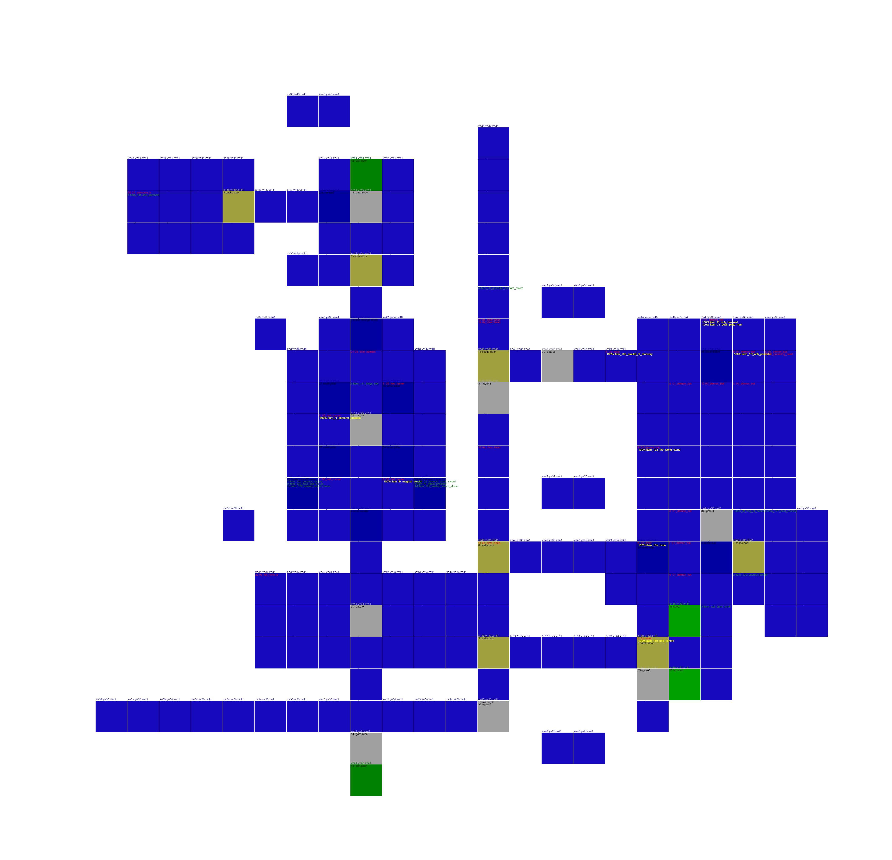
Shadow Tower
shadow_tower_part1
Item Memory used 0
Creatures attributes 0/0/0

shadow_tower_part2
Item Memory used 0
Creatures attributes 0/0/0
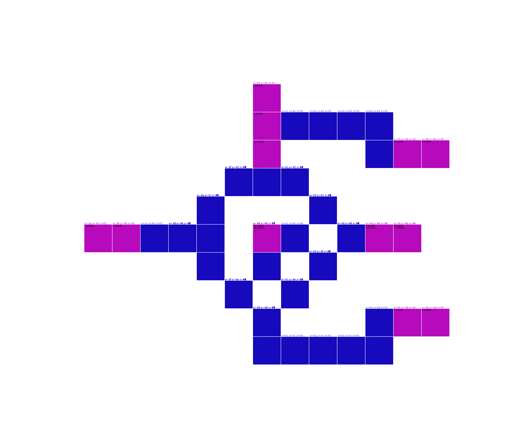
shadow_tower_part3
Item Memory used 0
Creatures attributes 0/0/0

Void
void
Item Memory used 0
Creatures attributes 114/128/128
0 0% 0x20 00_balron_a wd255-255 md255-255 a114 a114 m15
3 0% 0x20 03_balron_b wd176-198 md255-255 a194 a194 m16
5 0% 0x20 08_demon_king wd80-112 md255-255 a0 a0 m18
30 100% 0x20 01_unknown_i wd176-192 md136-154 a114 a114 m0
31 100% 0x20 02_unknown_j wd176-192 md136-154 a114 a114 m0
32 0% 0x20 04_unknown_k wd0-0 md0-0 a0 a0 m17
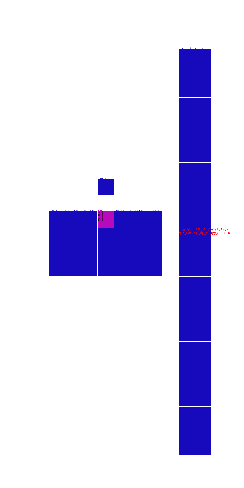